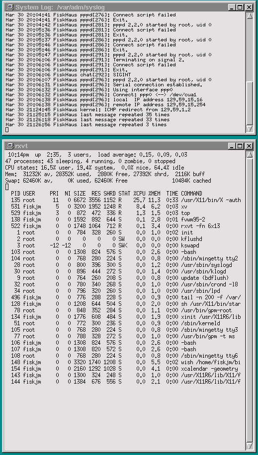
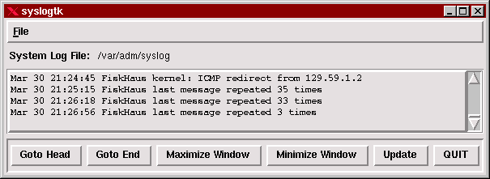
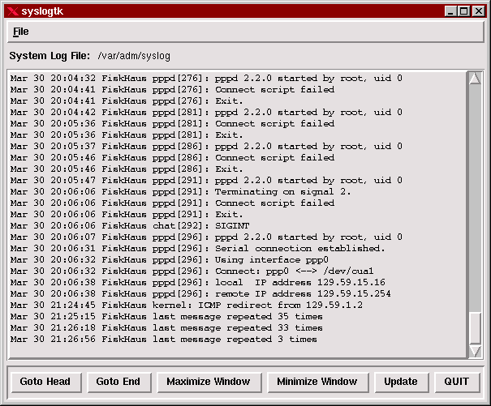

Sponsored by:

Our sponsors make financial contributions toward the costs of publishing Linux Gazette. If you would like to become a sponsor of LG, e-mail us at sponsor@ssc.com.
|

|

|
|

|
The Whole Damn Thing 1 (text)
The Whole Damn Thing 2 (HTML)
are files containing the entire issue: one in text format, one in HTML.
They are provided
strictly as a way to save the contents as one file for later printing in
the format of your choice;
there is no guarantee of working links in the HTML version.
Got any great ideas for improvements! Send your comments, criticisms, suggestions and ideas.
This page written and maintained by the Editor of Linux Gazette, gazette@ssc.com
Write the Gazette at gazette@ssc.com
|
Contents: |
The work being done with the LG is great! As for ideas, taking into account that most known applications are those which are for the PCs ( DOS based or Windog based ) why not a section dedicated to those ( like me ) that wish that soon we will get a Linuz that will be filesystem wise, a Linux wich will run DOS applications without having to distinguish from those meant for Linux/Unix, and things like that.
-- Bye/Francisco :)
 Date: Wed, 05 Mar 97 11:24:23 -0500
Date: Wed, 05 Mar 97 11:24:23 -0500
Subject: Request
From: Bill R. Williams, brw@etsu-tn.edu
Actually, this is more a request than a "Letter to the Editor"; however, you may use it as/if you see fit.
A fundamental element of security is the use of "shadow" passwords. Linux (and some commercial un*x!) systems do not necessarily include this feature by default. (I have thus far always used Slackware and it does not install with the Shadow Password Suite (SPS) configured.)
I consider SPS absolutely essential to any un*x (Linux) system which is accessable by users. In other words: No, I don't need it on my home Linux because that system is not connected to a network and I'm the only one using it. While there are worse things than having to install the SPS it is a task that I really dread. Makes me very nervous.
So here's a question for those of you who have evaluated the various Linux distributions: Do any of the distributions provide Linux with the SPS installed and all the appropriate utilities and other pre-built packages built against the SPS? (Such as sudo and wu-ftpd.)
A related question which is not immediately obvious: Using a given distribution -- Red Hat or Debian or whatever -- are there any potential hazards in bringing in packages which may not be part of that distribution? Since I have no experience with anything other than Slackware I do not know what is involved in the packaging software used by other vendors; however, I am aware that some vendors do have utilities which can track the levels of various components. If I were to install some software package which might not be part of the "installed" distribution what is the probability that I will "step on" the original installation's package tracking? As a trivial example: Suppose I want to install 'Doom' from my old Slackware CD-ROM onto my "Miranda v0.01" distribution of Linux. Am I going to have a problem over this when I go to update my "Miranda" with a new release? (Linus had a new "Miranda" in January! See, it could happen. ;-)
And on an entirely different subject... There has GOT to be, somewhere, a utility which can be used to CORRECTLY configure the monitor settings for XFree! I have tried. I really have. Every time I come across an item on this subject I read and study it, but no matter how hard I try I can't seem to get it through my thick head as to what's what. The supplied servers can figure out the video cards with no problem, but then there's the stuff dealing with the monitor and refresh rates and Hz and KHz and bandwidth and dot clocks and... this is where I lose it completely. Something with heuristic abilities which would allow me to just type in everything in my monitor's manual which the program would parse out into the significant lines for the XF86config file such than when I start X I have *no* modes which cause the output to skew off to the side and thereby causing me to worry that I've fried the tube. (*sigh*)
I have the new X (v3.4?) with the graphic setup utility. Better. But there are *still* modes which are frightening to see. "...push down one place it just bubbles up somewhere else."
Comments, articles, and/or suggestions on all the above from the fine folks at "Linux Journal" and the readers thereof will be much appreciated!
Bill R. Williams
Date: Sat, 01 Mar 1997 20:49:13 -0800
Subject: X Windows Depth...Linear Addressing Problem.
From: Nicky Wilson, benson@znet.com
After fiddling with the xf86config file in a concerted effort to coax X into displaying 16 bit color, I was dismayed to learn that with my current hardware (16 megs RAM and a Cirrus Logic GL-5426) 16 bit color is *impossible*...not because of any hardware incapability, but because of a certain limitation of X Windows itself...a problem with linear addressing. Seems that to have 16 bit color under X, one must have linear addressing enabled, which only works if the system has *no more than 14 megs RAM*.
(*blink*)
So I'm just two megs from the 16 bit color I so took for granted under Win95. I can't even pull out two megs (downgrading my system to work under Linux?!) because of my one 16 meg memory chip.
There has *got* to be a way. I was hoping to work on my graphics stuff under Linux, but 256 colors just doesn't cut it.
Does anyone at Linux Gazette have a solution? I heard something about making a two meg "memory hole" (?), or a program that fools the system into thinking that there's less RAM than there actually is. Any ideas? (I wonder if the X development team are working on this problem?)
Thanks for any input.
Your Friendly Local Neighborhood Novice,
Nicky
Date: Sat, 15 Mar 1997 03:41:04 GMT
Subject: Soundcard under Linux
From: L Hatch, tn00607@ibm.net
After recompiling my kernel I managed to get my soundcard working under Linux ... the only problem is that I have to boot into dos first to set up the card ... the card is softset through my autoexec bat ... its an ESS Audiodrive .. any suggestions
Another question as well ... I want to connect two machines together using a modem dialup connection .. I want to be able to dial from a standard comm prg under dos, win, win95, etc and turn control of the terminal over to the person on the other end so that they can use a linux shell in their comm prg ... managed to do it under dos by getting a mdm connection and then doing a ctty com2: at the command prompt to turn control over to them ... they would get a C:> and be able to enter commands, and get the output in their comm prg ... any suggestions of how to do it under linux thanks
Date: Mon, 17 Mar 1997 15:11:45 -0800
Subject: Stupid question
From: Steve Arnold, sarnold@rain.org
Howdy: I just searched your site looking for an answer, but failing that, I'll just ask directly:
What the heck is the screen-blanker that runs under the console by default (ie, what is the name, where is it started, etc)?
In the old RedHat 2.1 (kernel 1.2.13) it was disabled after X starts, but in the new Redhat 4.0 (kernel 2.0.28) it still kicks in under X, even when running xlock or something similar.
What binary and what switch do I throw to disable the console screen-blanker under X?
Thanks in advance, Steve Arnold
Date: Sun, 23 Mar 1997 11:55:35 -0500 (EST)
Subject: Linux Question
From: Peter Pereira Stamford,
stamford@bme.unc.edu
Hi, I am a gazette reader and have a question that might be of interest to others too. It's a mixture of hardware + software problem. Before I sent this mail I did a quick overview of all the gazette's table of contents and Linux How-To's. I didn't find any help in these two places. If this is a common question and I missed it please forgive me.
With the spread of different systems, many can end up owning several small monitors. Instead of acquiring a new, bigger, more expensive, monitor one can use two monitors that can work as one big screen.
I am trying to install a second monitor to effectively get this bigger screen, since I have an extra monitor and card. I'm not trying to display the same image on both monitors. It is my understanding that MetroX (comes with my redhat version) permits me to have X divided into multiple virtual screens (forgive the lack of the official technical terms) and view two X virtual screens side by side on separate the monitors (I'm sure others Xservers do the same). Thus I can have different applications opened in each virtual screen avoiding clutering. (I'm tring to be precise because I have tried to get info before and was missunderstood).
My work place has an extra monitor and video card that I am willing to take advantage of. But currently when I have both video cards installed, I can't BOOT. I have been told that this is because only one of the video BIOS is accepted by ROM BIOS, requiring the second video BIOS to be turned off. My cards don't have this option (I don't think). Others told me that it is a setting on the mother board.
The software configuration of Metro-X for this seems easy and intuitive, but how do I set up the hardware? Maybe an explanation on X86Free on this would be good, but my problem is setting up the hardware.
Could you please help? If I need a special card is there a recommended one?
Date: Tue, 04 Mar 1997 20:02:22 -0500
Subject: broken issue14
From: Pinwu Xu, pxu@perigee.net
Hi there,
It's true that the issue14.html was broken. But one can fix it using
the Netscape editor (or save/print directly from the editor). That
works for me.
Thanks for your excellent work.
-- Pinwu Xu
Date: Wed, 05 Mar 1997 18:39:17 -0800
Subject: thanks
From: arne, asnow@cdepot.net
Just a note to say thanks for your work on the Linux Gazette. I'm a brand new Linux user and I have found the articles geared toward the new user invaluable. Thanks again.
Arne, Rocky Road Ranch
Date: Sun, 09 Mar 1997 16:08:06 -0500
Subject: Love the service
From: Thomas L. Gossard,
tgossard@ix.netcom.com
I've been using Linux for aprox. 2 years now and have been a subscriber to "Linux Journal" for about a year of that. I like what you have even better. I love the 2 cent section, has great tips and ideas. If you sold this as a magazine on the news stands or subscription I would be an avid buyer. As it is I've got this link at the top of my bookmarks. Keep up the great job.
Thomas L. Gossard
Date: Sun, 09 Mar 1997 01:19:54 -0600
Subject: Netscape
From: Anthony Scott,
ascott@Interaccess.com
Could you please tell me where Netscape for Linux is located....How much does is cost.
thx, tony (You can download it free from Netscape's home page. --Ed.)
Date: Sat, 8 Mar 1997 18:25:28
Subject: Thanks
From: Lance A. DeVooght,
devooght@flash.net
Just a note of gratitude for all your hard work in producing the BEST online magazine! Also, kudos to the sponsor, Infomagic. Rest assured I won't forget them next time I'm going to make a software purchase. And finally, I am very impressed with the fine writers you've assembled.
In Your Debt,
Lance DeVooght
Date: Thu, 20 Mar 1997 11:01:23 +0100 (GMT+0100)
Subject: Good non-fiction book! The Cuckoo's egg
From: Tomas Brostroem, tbc@rcc.se
A nice book that should interest all Linux-fans. "The cuckoo's egg" by Cliff (Clifford) Stoll.
Computer-security at it's worst.
I.m.h.o. the best non-fiction book I've ever read.
Regards, Tomas
![[ TABLE OF
CONTENTS ]](../gx/indexnew.gif)
![[ FRONT
PAGE ]](../gx/homenew.gif)

 More 2¢ Tips!
More 2¢ Tips!
 How to ftp Back Home
How to ftp Back Home
Date:Sat Mar 30 14:23:24 (PST)
From:Phil Hughesfyl@ssc.com
Many businesses place a firewall between the Internet and the inside systems. This is good protection and it just makes good sense. One common firewalling technique is to serverly restrict access through the firewall from the outside but allow a user on the inside to do most anything through the firewall to the outside.
When I am at home, I routinely need to move files between home and work. But, because of the firewall, I can ftp from work to home but not the other way around. What this means is that I need to establish an interactive connection (using ssh) from home to work and then initiate the ftp from work to home.
So far, so good. But, what I call "home" consists of various locations, all connected with a dial-up connection through one of four ISPs. All four ISPs use dynamic IP addresses meaning that each time I connect I have a different IP address for my home system. Even though the ISP knows what the current IP address for my system, the name server at work doesn't.
The solution is to enter the IP address of my home system into the ftp command at work. First, I need to find out what the IP address is. To do that, I execute the ifconfig command on my home system:
$ /sbin/ifconfig
lo Link encap:Local Loopback
inet addr:127.0.0.1 Bcast:127.255.255.255 Mask:255.0.0.0
UP BROADCAST LOOPBACK RUNNING MTU:2000 Metric:1
RX packets:19 errors:0 dropped:0 overruns:0
TX packets:19 errors:0 dropped:0 overruns:0
eth0 Link encap:10Mbps Ethernet HWaddr 02:60:8C:8F:A2:08
inet addr:198.186.207.131 Bcast:198.186.207.255 Mask:255.255.255.0
UP BROADCAST RUNNING MULTICAST MTU:1500 Metric:1
RX packets:969719 errors:0 dropped:0 overruns:0
TX packets:971132 errors:0 dropped:0 overruns:0
Interrupt:9 Base address:0x280 Memory:d8000-da000
ppp0 Link encap:Point-Point Protocol
inet addr:206.125.79.118 P-t-P:204.157.220.30 Mask:255.255.255.0
UP POINTOPOINT RUNNING MTU:296 Metric:1
RX packets:5434 errors:0 dropped:0 overruns:0
TX packets:5545 errors:0 dropped:0 overruns:0
$
The inet addr for the ppp0 interface (206.125.79.118) is the number I
need.
Now, on my system at work I enter:
$ ftp 206.125.79.118ftp then prompts for a login and password. I enter my standard login and password for my home system and ftp is up and running.
Checking if You're Root
Date: Sun Mar 23 23:20:51 1997 (PST)
From: Kevin Lyda kevin@faxint.com
In the march gazette raul miller suggested that the most portable way to test if you're root is [ -w / ]. that won't work if you're root file system is read only. [ -w /var ] might be a better method.
kevin
XV vs Xli
Date:Wed Mar 5 16:32:49 1997(PST)
From:Michael Hammel, mjhammel@emass.com
I wasn't aware of Xli (rather, I haven't looked at it), however your statement that xv can only tile image on the background. xv allows qutie a bit of command line control. I use the following to put up a background image at work (non-tiled, takes up the whole background):
xv -root -max -quit /export/home/mjhammel/lib/images/emass3.tga
The initial image is 601x339, with a root display of 1152x900. Since the original image is 24bpp the enlargement is very accurate in details.
Michael J. Hammel
Bash Shell Scripting
Date:Thu Mar 20 12:22;34 1997(PST)
From:Paul Sephton paul@inet.co.ca
I have been enjoying the fruits of the Linux Gazette for a number of years now. Recently, I had one of my users accidentally type rm *>bak, and immediately noticed something was amiss by the incoherent screams eminating from her office.
In an attempt to ensure this would not have the same disasterous effect again, and to protect my eardrums in future, I spent a couple of days excersising my bash shell scripting skills, and came up with what I believe to be a decent mechanism for maintaining versioned backups.
My attitude with regard to the normal cludges like aliasing rm and so on, is that it will not protect you against other programs which unlink files. (To date I have yet to write a C program that shells rm in order to unlink a file :)
Whilst writing the set of three scripts, it dawned on me that although some more complex tools do exist which perform the same sort of function, the Linux community might be interested in what I did.
Although it's not much more than a creative excersise in the use of the 'find' command, and suffers from the usual limitation of being restricted to the one file system, I include the three scripts for your perusal and possible inclusion in the gazette at your discretion.
Don't hesitate to contact me if you need more information.
Kind regards, and many thanks for the gazette.
Paul Sephton
Bash Shell Script 1
#!/bin/sh
if [ -z "$SAFEDEL" ];then
SAFEDEL=/u/safedel
fi
NDAYS=5 #Erase files after 2 days
MAXVER=6 # Start Overwriting versins at this count
BINDIR=$SAFEDEL/bin # Binaries directory
DATADIR=$SAFEDEL/data # Where links are to go
LOGFILE=$BINDIR/safedel.log # Output messages go here
ERRLOG=$BINDIR/safedel.err # Error output messages go here
DIRLIST=$BINDIR/safedel.dirs # List of directories found here
LOCKFILE=$BINDIR/safedel.lock # Lockfile to prevent re-entry
# Process the file $1 by creating a symbolic link in the data directory
# and an entry for the file in the index.
process-file()
{
SRC=`dirname $1`
FNAME=`basename $1`
VERSION=0
if [ ! -d $DATADIR$SRC ]; then
mkdir -p $DATADIR$SRC
# OWNER=`find -name $SRC -printf "%u"`
# chown $OWNER $FNAME:$VERSION
fi
cd $DATADIR$SRC
while [ -f $FNAME:$VERSION ]; do
VERSION=$[ $VERSION + 1 ]
done
if ! ln $1 $FNAME:$VERSION 2>> $LOGFILE; then
echo "Could not link file $FNAME:$VERSION" >> $LOGFILE
return
fi
echo -e "Linked $FNAME:$VERSION \t \tin $SRC" >> $LOGFILE
return
}
# Erase a file
erase-file()
{
echo "Unlinking $1 $2" >> $LOGFILE
rm -f $1
FN=`echo $1 | cut -f 1 -d ':'`
if ! { echo "$ERASED" | grep "$FN" - } ; then
ERASED="$ERASED $FN"
fi
return
}
# We want the version numbers to follow on each other, so that the next
# file we create gets a bigger version number. This makes sure they follow.
reorganise()
{
if [ -z $1 ]; then
return
fi
FN=$1
FILE_LIST=`ls $FN:* | sort -n -t: -k2`
if [ "$FILE_LIST" = ":*" ]; then
echo "All [$FN:*] files erased" >> $LOGFILE
return
fi
echo -e "File list to be moved is:\n$FILE_LIST" >>$LOGFILE
VERSION=0
for FNAME in $FILE_LIST; do
if [ "$FNAME" != "$FN:$VERSION" ]; then
echo "Moving $FNAME $FN:$VERSION" >>$LOGFILE
mv $FNAME "$FN:$VERSION"
VERSION=$[ $VERSION + 1 ]
fi
done
}
# The main shell script starts here...
cd $BINDIR
if [ -f $LOCKFILE ]; then
exit 0
fi
touch $LOCKFILE
date >> $LOGFILE
cat $DIRLIST |
(
while read SRC ; do
if [ `echo $SRC | cut -b 1` != "#" ]; then
echo "Finding files in $SRC" >> $LOGFILE
echo "Point 1 ($SRC)"
for FNAME in `find $SRC -type f -xdev -links 1 -print`; do
process-file $FNAME
done
fi
done
ERASED=""
echo "Point 2"
for FNAME in `find $DATADIR -type f -links 1 -ctime $NDAYS -print`; do
erase-file $FNAME "(older than $NDAYS days)"
done
echo "Point 3"
for FNAME in `find $DATADIR -type f -name "*:$MAXVER" -print`; do
FN=`echo $FNAME | cut -f 1 -d ':'`
erase-file $FN:0 "Too many versions (VERSION > $MAXVER)"
done
echo "Point 4"
for FNAME in "$ERASED"; do
reorganise $FNAME
done
) 2> $ERRLOG > /dev/null
rm -f $LOCKFILE
Bash Shell Script 2
#!/bin/sh
CURRDIR=`pwd`/
if [ -z $SAFEDEL ]; then
SAFEDEL=/u/safedel
fi
DATADIR=$SAFEDEL/data
BINDIR=$SAFEDEL/bin
cd $DATADIR$CURRDIR
if [ -z "$1" ]; then
echo
echo "Restores files unintentionally deleted"
echo
echo "Useage <salvage <filename>[:version] [dest]> from within the directory"
echo " in which the file was deleted."
echo
echo "The following is a list of your backed up files and their versions:"
echo " Salvageable Files:"
find . -xdev -type f -maxdepth 1 -links 1 -printf "%P\n" | column
echo " Files Currently in Use:"
find . -xdev -type f -maxdepth 1 -not -links 1 -printf "%P\n" | column
else
FN=`echo "$1:end" | cut -f 1 -d ':'`
VER=`echo "$1:end" | cut -f 2 -d ':'`
EXIST=`find $CURRDIR -name "$FN"`
# echo "[$EXIST]"
if [ -n "$EXIST" ]; then
echo "Incorrect file specification: File(s) are not deleted. ($FN)"
exit 0
fi
if [ "$VER" = "end" -o "$VER" = "*" ]; then
VER=""
fi
FILE_LIST=`find . -name "$FN:*" -printf "%f "`
FLIST=""
# echo "FILE_LIST is $FILE_LIST"
for FNAME in $FILE_LIST; do
FN=`echo "$FNAME:end" | cut -f 1 -d ':'`
FOUND=0
# echo "Looking for [$FN] in [$FLIST]"
for F in $FLIST; do
if [ "$F" = "$FN" ]; then
FOUND=1
fi
done
if [ "$FOUND" = "0" ]; then
FLIST="$FLIST $FN"
fi
done
# echo "FLIST is $FLIST"
for FNAME in $FLIST; do
if [ -z "$VER" ]; then
VERSION=0
NEXTVER=1
while [ -f $FNAME:$NEXTVER ]; do
VERSION=$NEXTVER
NEXTVER=$[ $NEXTVER + 1 ]
done
else
VERSION=$VER
fi
if [ ! -f $FNAME:$VERSION ]; then
echo "File $FNAME:$VERSION not found"
exit 0
fi
if [ -z "$2" ]; then
DEST=$CURRDIR$FNAME
else
DEST=$CURRDIR$2
fi
if ln $FNAME:$VERSION $DEST 2> /dev/null; then
echo "File $FNAME:$VERSION successfully recovered"
else
echo "Cannot link $FNAME:$VERSION to $DEST"
fi
done
fi
Bash Shell Script 3
#!/bin/sh
if [ -z $SAFEDEL ]; then
SAFEDEL=/u/safedel
fi
BINDIR=$SAFEDEL/bin # Binaries directory
DATADIR=$SAFEDEL/data # Where links are to go
# Erase a file
reorganise()
{
if [ -z $1 ]; then
return
fi
FN=`echo "$1:end" | cut -f 1 -d ':'`
FILE_LIST=`ls $FN:* | sort -n -t: -k2`
if [ "$FILE_LIST" = ":*" ]; then
echo "All [$FN:*] files erased"
return
fi
# echo -e "File list to be moved is:\n$FILE_LIST"
VERSION=0
for FNAME in $FILE_LIST; do
if [ "$FNAME" != "$FN:$VERSION" ]; then
echo "Moving $FNAME $FN:$VERSION"
mv $FNAME "$FN:$VERSION"
VERSION=$[ $VERSION + 1 ]
fi
done
}
# The main shell script starts here...
CURRDIR=`pwd`/
echo "Safedel: Purging extra versions in $CURRDIR"
cd $BINDIR
find $DATADIR$CURRDIR -type f -maxdepth 1 -links 1 -exec rm {} \;
for FNAME in `find $DATADIR$CURRDIR -type f -maxdepth 1 -print`; do
reorganise $FNAME
done


|
Contents: |
 Hardware Forums in Dallas, Texas
Hardware Forums in Dallas, Texas
Readers in the Dallas, Texas area may be interested in two forums for purchasing hardware that may not exist in other areas. The first is the North Texas PC Users Group meeting. This monthly meeting is held at the Infomart in Dallas (I-35E at Oak Lawn). The meeting is held on one Saturday a month and opens at 8:00 AM. A number of reputable local vendors show up to sell hardware and software. (In fact, a few months ago the vendor area was moved from the basement to a larger room because they were running out of space.) Prices at the NTPCUG meeting are generally cheaper than these vendors have in their own stores, and these vendors offer warranties and support as well. Call NTPCUG at ? to find out when the next meeting is. And stop by the local Linux User's Group booth and say hi, or ask them to load Linux on your newly purchased machine for free.
The other venue is truly unique. The First Saturday Sale is a monthly flea market held (surprise) on the first Saturday of every month. It is held outdoors under the Ross Street bridge. Take the Pearl Ave. exit to get there. Hang a left on Ross and follow the crowd. Selling officially starts at 6:00 AM, but feel free to show up earlier. Again, many of the vendors own local storefronts and offer the same service and warranty their storefront customers receive.
While these markets may not be the best place for a beginner to shop, a knowledgeable buyer can walk away from either of these markets with a crate of new gear at significant discounts.
-Matthew Mucker
Bedford, Texas
COMDEX/Spring '97
Linux International (LI) will be hosting a Linux Pavilion at COMDEX/Spring '97, which runs from June 2 - 5 in Atlanta, GA.
On June 7 & 8, the weekend following COMDEX/Spring '97, LI and the Atlanta Linux Enthusiasts (ALE), in cooperation with COMDEX, will be hosting the Atlanta Linux Showcase. The Atlanta Linux Showcase will feature vendors of Linux hardware, software, and services as well as conference sessions on various Linux topics. Attendees of COMDEX will be admitted to the showcase floor for free, and pre-registrants to the Atlanta Linux Showcase will receive free passes to the COMDEX trade show floor.
Some of the vendors on the showcase floor are:
The Atlanta Linux Showcase will be held at the Inforum in downtown Atlanta, GA, just a few blocks away from the Georgia World Congress Center, site of COMDEX/Spring '97. The show floor will be open from 9 a.m. to 5 p.m. on Saturday, June 7, and from 9 a.m. to 3 p.m. on Sunday, June 8. The conference sessions will run concurrently.
The Inforum is located at 250 Williams St., Atlanta, GA.
More information on the Atlanta Linux Showcase can be found at http:www.ale.org/showcase
More informaiton on COMDEX/Spring '97 can be found at http://www.comdex.com/comdex/owa/event_home?v_event?id=26
Announcing IT Horizon '97 Symposiom
The Fisher Center for Information Technology and Management, Walter A. Hass School of Business , UC Berkley announces:
Send you submission(s) by April 4, 1997 to Deborah Murray, Director-Professional Training, UniForum Association, 2901 Tasman Drive, Suite 205, Santa Clara, CA 95054 -OR- E-mail to dmurray@uniforum.org
Linus News
Linus Torvalds received Uniforum's "Lifetime Achievement Award" for his work on Linux.
Linus (as always) pointed out that he would accept the award, but that it really belonged to the entire Linux development community.
The award, which has been presented annually since 1983, recognizes individuals or groups whose work has significantly advanced the cause of open systems over time, or has had an immediate and positive impact on the industry with long term ramifications.
To give the idea of others who have received it, James Gosling also accepted an award at this meeting for his work on Java. Linus was in good company.
You can see pictures of him receiving the award at:
http://daily.comdex.com/events/uf97/photos3.htm
HOWTO Update
A major update of the Linux Commercial HOWTO, a listing of commercial software products for Linux, has been published. The new release includes new categories, descriptions of more software packages than ever and updates of existing entries.
The listing can be obtained from its primary site at http://www.cyrius.com/tbm/Commercial-HOWTO and from LDP mirrors all around the world.
Announcing Decision PCCOM8
Announcing the availability of a Linux driver for the Decision PCCOM8 multiport serial card.
Signum Support, a company specialising in free software support and Linux, was approached by MYDATA Automation AB, a Swedish robotics company, to write a Linux device driver for the Decision PCCOM8 multi-port serial card. The driver and was written by Christer Weinigel (wingel@signum.se) and Mikael Cardell (mc@signum.se). Any questions regarding this driver can be sent to pccom8@signum.se
Announcing the Shuttle Connection (EPST)
Signum Support, a company specialising in free software support and Linux, was approached by MYDATA Automation AB, a Swedish robotics company, to write a Linux device driver for a parallel port SCSI interface. This driver for the Shuttle Connection was written by Christer Weinigelwingel@signum.se at Signum Support.
This driver can be found as ftp://ftp.signum.se/pub/epst/epst-0.9.diff
The diff was made against a version 2.0.29 kernel. This driver (probably) still contains bugs and should be considered as ALPHA software.
Please note that there exists two incompatible devices, both which are called `Shuttle Connection'. To find out what model you have, take a look at the sticker on the back of the device, you ought to see either `EPSA' or `EPST' written on it.
This driver is works with the EPST model; if you own an EPSA model, take a look at http://www.torque.net/epsa.html where you'll find a device driver for that device.
Any questions regarding this driver can be sent to epst@signum.se
New Release of mtools
Announcing a new release of mtools, a collection of utilities to access MS-DOS disks from Unix without mounting them.
Mtools-3.3 fixes a typo in mdel, which made it command unusuable.
Mtools supports Win'95 style long file names, OS/2 Xdf disks and 2m disks (store up to 1992k on a high density 3 1/2 disk). The most notable new feature (over 3.1) is FAT 32 support. There is also mpartition, a simple partitioning programing to setup Zip and Jaz media on non-PC machines (SunOs, Solaris and HP/UX).
Mtools can currently be found at the following places:
and soon at:
There is an mtools mailing list at mtools@linux.wauug.org. To subscribe to it, send a message containing 'subscribe mtools' in its body to majordomo@linux.wauug.org.
gv 2.9.4 Announcement
gv 2.9.4 is now available. gv allows to view and navigate through PostScript and PDF documents on an X display by providing a user interface for the ghostscript interpreter. It may be obtained either from its homepage at: http://wwwthep.physic.uni-mainz.de/~plass/gv/" or via anonymous ftp from: ftp://thep.physik.uni-mainz.de/pub/gv
Please note that gv is derived from Tim Theisen's ghostview 1.5.
gv surely works on
I also got reports of happy users on
gv requires Kaleb Keithley's Xaw3d widget set. VMS users will find everything needed to install this widget set at the locations listed above.
For Unix users working on a system not equipped with this widget set the page http://wwwthep.physik.uni-mainz.de/~plass/gv/Xaw3d.html may provide some assistance when trying to install it.
SafePassage Web Proxy
Oakland, CA -- C2Net Software, Inc., and UK Web, Ltd., announced the 1.0 release of a new product, "SafePassage Web Proxy." This product, developed entirely outside of the United States, provides full-strength, non-escrowed cryptography for users of any standard web browser.
SafePassage is an enhancement for "export" browsers, an add-on product that works with any standard web browser. Acting as an intermediary, or proxy, it intercepts weakly encrypted connections on their way out and transforms them to use full-strength cryptography. "The weak connection never leaves your PC," explains Parekh, "it gets decrypted and then re-encrypted with a full-strength cipher."
SafePassage provides secure connections using strong cryptography for any browser that supports standard SSL tunneling, a feature normally used by firewall software. It currently runs on Windows 3.1, Windows 95, and Windows NT.
Evaluation versions of SafePassage can be downloaded at no cost from UK Web's site at: http://stronghold.ukweb.com/safepassage It is currently unavailable for distribution within the US and Canada, but a domestic version will be made available in the near future. A single- user license is $49, prices for volume licensing start at $995 for fifty users.
Announcing Turbo Vision 0.3
Turbo Vision (or TV, for short) is a library that provides an application framework. With TV you can write a beautiful object-oriented character-mode user interface in a short time.
TV is available in C++ and Pascal and is a product of Borland International. It was developed to run on MS-DOS systems, but today it is available for many other platforms (ported by independent programmers).
This port is based on the Borland 2.0 version with fixes.
Main changes from version 0.2 to 0.3
Where to download the library
If you don't want to wait the file to be moved to the destination directories, you can download a copy of it from:
ftp.cdrom.com:/pub/FreeBSD/incoming/tvision-0.3.tar.gz
Announcing the Release of TeamWave Workplace 1.0
TeamWave Software Ltd. is pleased to announce the release of TeamWave Workplace 1.0, an Internet groupware product that lets you work together with colleagues in real-time or asynchronously, using Macintosh, Windows or Unix platforms.
Check us out at http://www.teamwave.com
Release of Samba SMB File Server
The release of Samba SMB File Server has been announced. The server includes support for Western European Languages in filenames served by Samba, allowing Western European users of Microsoft Windows(tm) products to store native language filenames on their UNIX file servers.
Although this is a new minor version release, there have been many bugfixes and improvements from previous releases.
The new verson is available on a GNU gziped tar file from
ftp://samba.anu.edu.au/pub/samba/samba-1.9.16p11.tar.gz
and should be available from mirror sites throughout the world shortly. For details see the main Web site for information about Samba, at :
http://samba.canberra.edu.au/pub/samba
Announcing UNIPEN-related Software Package
UPTOOLS3
This is to announce the new release of the UNIPEN-related software package (works great on Linux, too):
This UNIX software is mainly intended for researchers in on-line handwriting recognition. It allows for a hierarchical annotation of on-line handwritten data coming from XY digitizers or pen computers. The software is _not_ intended for processing off-line (i.e., optically scanned) handwriting data. The purpose of this software is to stimulate the use of the UNIPEN file format for on-line handwriting recognition research. This is the same data format as is used within the UNIPEN recognizer benchmark project http://hwr.nici.kun.ml/unipen/
An introduction to UPTOOLS3 can be found at:
http://hwr.nici.kun.nl/uniopen/uptools3
The new software is available via ftp at:
ftp.nici.kun.nl:/pub/INIPEN/tools/uptools3.tar.gz
Announcing Ghostscript System 0.2.0
The Display Ghostscript System is a free software implementation of a Display PostScript(tm) System. A Display PostScript System provides a device-independent imaging model for displaying information on a screen. The imaging model uses the PostScript language which has powerful graphics capabilities and frees the programmer from display-specific details like screen resolution and color issues.
The Display Ghostscript System is composed of a PostScript interpreter (Ghostscript), the Client library, and the pswrap translator.
The Display Ghostscript System uses a client/server architecture. Applications are linked with the Client library which communicates with the PostScript interpreter residing in the server. The application utilizes the procedures and data structures in the Client library which are independent of the actual PostScript interpreter.
The pswrap translator allows you to take custom PostScript language programs and wrap them with a C function interface thus allowing your applications to call them directly. pswrap programs are generally more efficient then performing the same PostScript program purely with the Client library procedures.
The dgs-0.2.0.tar.gz distribution file has been placed on ftp.gnustep.org/pub/gnustep
The program requires gcc 2.7.2.1 or higher.
The `.tar' file is compressed with GNU gzip. Gzip can be obtained by anonymous ftp at any of the GNU archive sites.
For info about FTP via email, send email to ftpmail@decwrl.declcom with no subject line, and two-line body with line one `help' and line two `quit'.
The most recent (not necessarily tested) snapshots of the library will be placed in ftp://alpha.gnu.ai.mit.edu.gnu/gnustep
GA Plug-In for NExS Spreadsheet Available Now
X Engineering Software Systems (XESS Corp.) announces the immediate availability of a genetic algorithm (GA) plug-in for its NExS spreadsheet. Those interested in the genetic algorithm plug-in can download the source code and a PostScript manual from www.xess.com. A free, 30-day version of the NExS spreadsheet and the new conNExions-BETA API can also be downloaded for the HP/UX, AIX, Digital UNIX, SunOS, Solaris and Linux platforms.
Genetic algorithms (GA) solve optimization problems by modeling potential solutions as chromosomes which can breed with one another to produce better solutions through the forces of natural selection.
The GA plug-in provides one new NExS function: @GENALG(...) which optimizes a fitness function that is affected by a group of 1/0 variables in the sheet. Any NExS function or combination of functions can be used to specify the fitness function.
The GA plug-in interacts with the NExS spreadsheet through the conNExions-BETA API. The source code for the plug-in is being made available for modification and customization.
Annouunicing MkLinux DR2.1
We are pleased to announce the release of MkLinux DR2.1. DR2.1 includes support for the Power Macintosh 601/NuBus 601/PCI bus and 604/PCI bus systems: the Power Macintosh 6100, 7100, and 8100; 7200; 7500, 7600, 8200, 8500, and 9500. (Support for 603-based systems is forthcoming but is not yet available. DR2.1 does not yet support Powerbooks or most Performas at this time.)
DR2.1 is our third Developer Release of MkLinux and the first Release to be included in our Reference Release, published by Prime Time Freeware (PTF). The MkLinux Reference Release consists of a 360-page book and 2 CD-ROMs: the Apple MkLinux DR2.1 disc and PTF's Reference disc, packed with lots of interesting and useful reference material. (The two CD-ROMs are each also sold separately.)
The MkLinux Reference Release is available by mail order from PTF and other vendors, and is also available through many technical bookstores, as are the individual discs. Contact Prime Time Freeware for details at info@ptf.com or visit their Web site at www.ptf.com.
MkLinux is available both on CD-ROM and by anonymous ftp download from ftp://ftp.mklinux.apple.com and our various mirror sites. (Please be patient with the mirror sites; it may take some of them a while to get DR2.1 ready for downloading!).
With the release of DR2.1, DR2 will no longer be available or supported. We will retain the DR2 "Help and Support" information on our Web pages, but DR2 itself will be removed from our FTP server.
Check out the Web site at:http://www.mklinux.apple.com/DR2.1 for more information on this release. All Readme files from the DR2.1 Distribution, including the Release Notes (Readme First) and the Installation Guide (How to Install MkLinux) are reproduced on our Web pages.
Metro-X 3.1.5 Now Shipping
Metro Link is now shipping Metro-X 3.1.5. This is an updated version of Metro-X 3.1.2 for Linux, which is a commercial X server replacement for use with XFree86. It contains various fixes and support for the following additional cards:
For a complete list of supported cards, see our cardlist:
http://www.metrolink.com/products/metrox/cardlist.html
For more details look at the complete product description:
http://www.metroling.com/products.metrox.ess.html
PRICE FOR LINUX VERSION:
New Purchase: $99
Upgrade from earlier release: $69
CONTACT INFORMATION:
Metro Link, Inc.
http://www.metrolink.com
and sales@metrolink.com
 The Answer Guy
The Answer Guy
 SATAN URL Correction
SATAN URL Correction
From: Richard White, whiter@digex.net
In the Linux Journal #14, you made reference to
ftp.cs.perdue.edu...(grin) Doesn't exist. I think that it was supposed
to be ftp.cs.purdue.edu.
-- Richard D. White, Business Connectivity Technical Support
 Yes! That was, of course, a typo.
But other than that -- did you find the info useful?
Yes! That was, of course, a typo.
But other than that -- did you find the info useful?
Yes. Very. I've just downloaded SATAN and a few of the other security
tools. I work in customer service for leased lines and I occasionally
assist customers in configuring their firewalls. Learning what holes there
are and how to plug them is very worthwhile knowledge.
Have you tried cops (Dan Farmer's earlier host based
auditing package) or Tiger (Texas A&M University)?
Have you gotten tripwire running? I (and most of the rest of the Linux community that's tried it) had a little trouble with Tripwire. I had fussed it into submission a number of months ago -- forgotten about it. Then recently I had to fetch and build a new copy.
I encountered the same problems building it -- and the same problems with the README.linux I found myself muttering that someone -- anyone -- ought to prepare a proper set of patches that allow the Linux user to just compile the thing with minimal effort.
Now I'm not a programmer (although I do "play one on the 'net") so I really didn't feel qualified to do this. However I never have been able to inspire or manage much of a volunteer effort in others so I did it myself.
Creating a set of patches involved teaching myself how to use CVS (version control system). I'm thinking of writing up an article on using CVS to track local changes in downloaded source trees and cutting diffs so you can share the work you do with others on the net.
Naturally I'd use tripwire as one example -- probably pgp as another. I'm also planning on importing my kernel sources into CVS.
If your interested you could get my patch and let me know if it works. It's about 150 lines of text that seems to work for me using Larry Wall's standard 'patch' program.
-- Jim
EDI On Linux
From: Adam Morrisom,
adam@morrison.iserv.net
I have just got management to permit me to install our first Linux box, right
next to our not-so-mighty RS/6000. So far it has operated flawlessly (which
is exactly what I expected). And suddenly Linux is a possible solution for
jst about every problem we have (they loved the price tag). Now I have to
implement EDI, and I was wondering if any software is available for Linux, I
haven't been able to find anything, on the software map, sunsite or any where
else. Any pointers or people to contact would be greatly appreciated.
Adam,
You certainly put in an good entry in Jim's
"Stump the techie" contest.
I've heard of EDI (electronic data interchange) and vaguely recalled that it is a data format specification for electronic commerce (mostly in the mainframe world where X.25 predominates over TCP/IP).
However I haven't heard of any projects or products being available specifically for Linux.
Here's a few web pages that I did dig up that might help:
I hope these help. Basically it looks like there are not "shrinkwrap" or "off-the-shelf" EDI packages for any platform. Good luck.
One approach you may take is to contact the publishers or authors of your existing EDI applications and see if they can do the port for you.
-- Jim
zmodem
Help answer guy! I cannot download from the net! Here's the story: - I run linux v2.0.0. I am using minicom v1.71. I have NOT touched my file transfer protocols since I installed, so they would be the default configs.
 I hate debugging serial line problems.
I hate debugging serial line problems.
Here's the basic litany for solving modem problems:
What happens at lower speeds? What IRQ is this serial line using? What sort of UART is installed? What are the flow control settings? Does the cable have conductors for all of the flow control signals? How is the modem configured (hardware and init strings)?
minicom 1.71 is pretty old. I have 1.75 here -- and there may be even newer versions up on sunsite.
Incidentally -- you should probably upgrade to Linux kernel version 2.0.29 or so.
Your problem may not be related to either of these factors -- but it won't hurt to upgrade.
The first thing I'd check is Minicom's configuration for init strings and flow control. Try an init string of:
AT&C1&D2
... (which I remember from years of supporting PCAnywhere as well as seeing it in my current configuration). These set the modem's behavior for the DCD (device carrier detect) and flow control. I don't remember which is which and what the other numbers do -- look them up in your modem's manual if you're curious).
Then make sure that minicom's "Serial port setup" specifies "Hardware Flow Control" is "on."
When having problems with serial lines and modems I find it handy to get the digital equivalent of a "second opinion." -- Do you run any other comm software on this system (pppd, uucp/cu, mgetty -- dial-in, seyon)? Do those work reliably when transferring data (putting the line under load)?
I'd suggest getting a copy of C-Kermit from Columbia University kermit.columbia.edu . No offense to Miguel van Smoorenburg but minicom was having problems on my system, too. C-Kermit is doesn't have any of the full screen, ncurses "feel" to it but does a good solid job of talking to the modem. It's scripting capabilities are also far more advanced than minicom's 'runscript' -- and has features that would be to force 'minicom' to do through an 'expect' script (for example).
Do you have another account on another system (BBS or ISP)? Do your file transfers work O.K. to or from there? The problem may be with your ISP rather than at your end.
What if you try a different protocol -- such as kermit? Kermit is often characterized as "slow" compared to zmodem -- but this is largely because it's default is tuned for the very noisy, unreliable connections that were common when it was created (almost 20 years ago).
After checking with another comm. program I'd look a little lower. Using the commands:
stty -a < /dev/modem
... and
setserial -a /dev/modem
(both of these assuming you have a "modem" link to
the appropriate /dev/ttyS* entry on your system).
Make sure that your stty reports crtscts (for the flow control). Then make sure that the cable between your computer and your modem has all those pins connected.
Double check that you don't have an IRQ conflict. These are insidious in that they may not show up until the port is under load.
In addition check to see that you have a high speed UART (16550AFN) on that port.
Next I'd check the modem's configuration. You can see some of that with AT&V (which on many Hayes modems dumps the configuration date and S-register values to your terminal). Look at the Init strings that you are using in Minicom and look in the modem manual for recommended init strings for similar software.
After checking all of that I'd shutdown and boot up in DOS (if you don't have a copy of DOS you can consider downloading a copy of Caldera's OpenDOS. I'm not sure what the licensing terms will be -- but I did read that we're all invited to play with it for 90 days). Along with a copy of DOS you also need a Telix, Qmodem, Procomm, or other comm. package. There are many of these in shareware -- Telix is my personal favorite.
(Note: I am not advocating use of these packages without respect to their licenses. If you choose to continue to use Telix or OpenDOS -- even for the occasional troubleshooting session; please read and abide by their licensing and registration. Yes, I have fully legal copies of Telix (DOS and Windows)).
In any event I like to check from plain old DOS since the old real mode program loader is so minimal. You could try building a Linux kernel with no support for TCP/IP and stripping out all of the device drivers except the serial and console support and booting that in single user mode ... and that still isn't close.
The idea is to see if any of your other devices or hardware features are conflicting.
 i am a best internet shell account, i believe iris but i don't
know the version.
i am a best internet shell account, i believe iris but i don't
know the version.
I'm guessing that you mean that your account is at
best.com and that they are running Irix (SGI).
(Which is interesting -- since I would have guessed
Sun/Solaris for them -- but what do I know).
Note: Irix and Solaris are not known for sterling serial line support. They are currently geared for ethernet TCP/IP support -- on the assumption that most sites will use terminal servers (small dedicate devices that convert serial connections to telnet sessions). Consequently I've heard that the copies of rz/sz that ship with these should routinely be replace with newer sources from the 'net.
i have a usrobotics sportster 28.8 modem
Internal or external?
Personally I don't like the Sportster series. Their Courier's are nice (but spendy). I currently use a Practical Peripherals -- but my next modem will probably be a Zyxel.
I typesz <filename>
things go along fine until about 40k than i will get a couple of different
error messages:
BAD CRC:0
sometimes followed by another attempt at downloading
(usually only a bit or two) than the same error OR
GARBAGE COUNT EXCEEDED:0
followed by a time-out.
AARRGH! what the heck is going on? u can email me privately if you would prefer, as this is probably a totally common problem and i am just not looking in the right place!
My guess would that you don't have a high speed UART. Or that your flow control isn't properly set.
The reason I guess this is that 40K is a reasonable amound of data for the modem to get and buffer while you system does a context switch. The buffer overruns (in a 16450 -- older, low-speed UART) could easily be fatal to the transfer in the first context switch.
With the 16550 UART -- the UART has a 16 byte FIFO buffer. That's enough for the UART to change the state on the handshaking lines (lowering the CTR -- clear to receive -- line) and enough still store the incoming data while the other system responds (stops sending).
At 28.8Kbps coming into a 16450's (one byte!) buffer the sender will have tossed a lot of bits out before getting the message (that your system is dropping them all on the floor).
I am copying this to the Linux Gazette *because* it is a common problem. Most of us in the real world use modem -- we don't have T1's or ISDN/ethernet bridges (actually I do have a Tracell WebRamp but I'm not using it yet). So we are still stuck fighting with these problems.
I'm hoping that USB (IEEE 1394 "Firewire") actually takes off in the next year. It's been hanging in the wings, timidly for about two years now and it's LONG overdue.
Has anyone out there run a USB board under Linux?
For those who are lost about "Firewire" refer to:
If you have any Linux news on this topic -- mail it to tag@starshine.org.
--Jim
Running the Internet with Linux
From:Ricardo Romero rromero@netfriendly.com
Hi, my name is Ricardo Ribeiro Romero and i live in Brazil, i try to run INTERNET from linux but this not run, you may help-me?
Tks,
Romero, Ricardo
At the risk of seeming unfriendly, Romero, I'd have to
suggest that you might want to look for a local consultant
or computer specialist to help you.
Questions to a publication -- particularly a free publication which is entirely supported by the volunteer efforts of the writers and the generous sponsorship of SSC have to be fairly specific and of reasonably broad interest.
Any reasonable distribution of Linux includes all of the utilities you need to connect to the Internet as a client and all of the utilities that most people would ever want to be a service provider.
It is not clear from your message whether you are trying to set your system up as a server/provider or as a client or both.
There are several good books that go into broad coverage of Networking with Linux (which is largely the same as networking under other forms of Unix). My personal favorite would be the Linux Documentation Project's Network Administrator's Guide (LDP NAG for short). This is available electronically (as text, postscript, TeX, or HTML) and is probably on any set of CD's that you'd buy. You can also purchase a professionally bound and printed copy from O'Reilly & Associates (among others).
Along with that O'Reilly also publishes a book called something like: "Getting Connecting: Establishing a Presence on the Internet" (That would be the "Pig" book) by Kevin Dowd). If you're trying to set yourself up as an ISP or if your want to have a dedicated connection to the net (say for your office) than this is probably what you want.
Personally I recommend that most small business and private people avoid "dedicated" or "permanent/full-time" connections to the 'net. It's much less expensive to configure UUCP for mail and news -- and look at virtual hosting and/or co-location for serving up web pages and other services. This can be supplemented with demand dialed PPP (using scripts or diald) to provide the web access -- over a modem or via ISDN.
One of the big benefits of ISDN is the lower latency. A modem connection takes about 30 seconds to 1 minute to dial, ring, connect, and negotiate. ISDN can do that in about 3 seconds. You'll be much less reluctant to hang up and quit hogging your ISP's phone line if you know that you can get back in about 3 seconds.
In addition to the lower expense running your site as a disconnected network relieves you of quite a bit of the security concerns associated with a full time net connection. Sure -- your PPP link is inherently bi-directional (people can connect back to your through it and attempt to exploit the same services that they my attack on a fully connected site). However you'll be there to notice any additional load or any anomalies -- and your whole site is considerably less attractive to crackers anyway.
(People who connect their Linux systems to the 'net via PPP really should take a 1 hr course on securing their hosts. Maybe I'll crank out an article on that sometime). Romero,
Back to your question. Please try reading up about these connections and/or consider hiring a local consultant. I don't know anything about the phonesystems in Brazil -- and I get a little sketchy about ISP's if I get more than about 200 miles inland from the Pacific Coast.
--Jim
Respawning too Fast
From: Igor Markov imarkov@math.ucla.edu My question is about the infamous "Resapawning too fast" message from init. This message appears in my /var/log/messages every 5 minutes (of course!) for xdm I'm just guessing that this is for "The Answer Guy" init: Id "x" respawning too fast: disabled for 5 minutes However, xdm is running (I see it in ps output and I don't have problems using it).
You don't show the appropriate lines from your
your /etc/inittab but they should look something like:
# Run xdm in runlevel 5 (and 4 for me) x:45:respawn:/usr/bin/X11/xdm -nodaemon
(Note: I run xdm in 4 and 5 which unusual -- but 4 is my custom default -- with 12 VCs, xdm in VC13 -- accessed by the right alt-key + F1 -- and syslog output on VC 15, VC14 is used for stray open commands or to redirect pesky output from backgrounded processes).
My guess would be that you don't have the -nodaemon switch on yours. (Try adding it).
If I'm mistaken than the troubleshooting will be more involved. Check with the vendor for your distribution of Linux and see if they have some patches.
Red Hat users may want to look at: http://www.redhat.com/support/docs/errata.html
... to see what's been fixed since your CD was burned.
Also you may want to look in your xdm-config file (/etc/X11/xdm/xdm-config -- if you're lucky -- otherwise it could be in .... /usr/X11R6/....????).
The best introduction to xdm I've ever found was in _The_Shell_Hacker's_Guide_to_X_and_Motif_ from John Wiley & Sons.
It seems that init tries to spawn a second xdm.
I couldn't confirm or reject this hypothesis...
(egrep xdm /etc/* /etc/*/* did not show anything promising)
Thank you
Respawning too fast indicates that the program
is exiting (pretty much immediately) and that init
figures that there must be some bad problem. For
example if getty is respawning it may be that it's
attempt to grab the serial line is failing (like
there is no serial driver configured in your kernel
and you forgot to load the module -- or something like that).
If xdm is loading and forking off a daemon (it's default) then this will look like an exit/failure to init. The -nodaemon will force xdm to run from the console in which init started it (not try to "background" itself as it would do if you ran it from a command line).
The fact that your copy is working suggests this -- but when you log out of your xdm session you might have to way upto five minutes for init to decide to try xdm again (unless your xdm logout configuration is doing the respawning or something weird).
--Jim
Problems with Keyboard Mapping
From: Gilbert R. Payson
g.payson@edina.xnc.com
Hello. I have three (okay, four) linux machines in Germany.
My problem is this: In Xwindows, my keyboard mapping is almost perfect.
But, there are a few problems:
@ doesn't work. It brings me to the last edited line (like an up-arrow) How can I fix this?
thanx! -gil
I think you want to look at the xmodmap command.
You'll also want to look at the following HOW-TO
documents:
--Jim
Modem Speed
From:Scott Atwood
atwood@cs.stanford.edu
I'd like to make a comment regarding a question from "The Answer Guy"
column in issue 13 of Linux Gazette about combining modems to increase
speed. This question reflects a common misconception of equating
bandwidth with speed. Latency is a much more important measure of
percieved speed, especially in interactive applications, such as
telnet sessions, and web browsing. Combining modems will increase
bandwidth, but latency will remain unaffected. For a more complete
treatment of this subject, see:
http://rescomp.stanford.edu/~cheshire/rants/Latency.html
an essay by Stuart Cheshire, author of Bolo.
I finally got around to reading your article. It was
very interesting.
I thought I had warned the reader that doubling his bandwidth would only help on large, bulk transfers -- but perhaps I overlooked it.
--Jim
Duplicating a Linux Installed Hard Disk
I have installed slackware on my PC and I'm completely satisfied. I want to duplicate my linux installed hard disk : Can I use my 1st hard disk as a source and copy all of its contents to a 2nd blank linux-formated hard disk? If I put this 2nd disk into another PC, it will boot Linux normally?
You can just use the 'dd' ("disk dump" or "data dump")
command on the raw devices. This will work if the two drives
are identical with no bad sectors.
Many years ago I'd have said you were an idiot to even consider it. Now I'd recommend against in much milder language.
The difference is that modern drives -- IDE and SCSI are capable of autotranslation (so the BIOS and often the Unix/Linux disk drivers don't need to know the true geometry of the disk. Most drives these days also have spare sectors on every track -- during a low level format spares are mapped into use for any bad sector on a particular track. Using this scheme (which is normally completely transparent to the host machine -- it's all in the drive's electronics) it is rare to see any bad sectors on a drive (until all the spares for a given track are used up).
So it is technical feasible to do this.
However I'd say that you're much safer to spend a little more time and "do it right."
Use fdisk to partition the new drive (presumably to set its partitions to match those on your first drive. You can do this without downing the system. I personally prefer to follow the advice and reboot after writing a new partition table -- but that's probably a force of habit from too many years of DOS and OS/2.
Then do amke2fs -c /dev/hdbX (where X is the partition
number) for each of these new partitions.
Then do a:
mount /dev/hdbX /mnt/tmp find . -mount | cpio -pvum /mnt/tmp
... to each of them.
Now your are almost done. The only problem is that your lilo boot map (on your existing drive) probably doesn't match the lilo configuration on the new one.
The most reliable way of dealing with that is to take the new drive to the new system -- boot from a rescue floppy using the root=/dev/hdaX command line parameters (on the lilo prompt line from the rescue floppy) and edit the /etc/lilo.conf. Then run lilo and reboot.
That's all there is to it. That's about seven steps (with 3 of them being repeated for each filesystem on the drive(s). The amount of time this takes is dwarfed by the actual task of opening your case and getting the jumpers on the new drive working right (which is far worse for IDE than most SCSI in my experience).
Why is this better? Well it deals with bad blocks and small difference in geometry. It also ensures that the new copy is defragmented. Other than that -- it just "feels" like a better way.
--Jim
Using the Linux Box as a Firewall
From: Tim Gray
timgray@lambdanet.com
Hi, I have a small problem that might affect others out there..
I am trying to get my linux box to act as a "firewall" of sorts for
my wife's Windows 95 computer. (I haven't been able to get her to
switch yet)
I installed ne2000 compatable boards in each, ran cable, installed
everything as per
per linux network administrators guide. The problem I have is
getting Packets
destined for internet to go out the modem line when it's not connected.
I need a way to have linux automatically fire up my dial-up connection when
it sees that the remote computers want to use it. and possibly kill the
connection after a period of non use.
Thank you. Tim
This arrangement is referred to a a "Proxy" server --
which is only a component of certain firewall architectures.
Specifically you appear to be trying to set up a "dial on demand Masquerading proxy host." (if I understand you correctly).
The first tool you need for this is called 'diald' -- (the 'dial daemon').
The most recent version that I know of is at:
ftp://sunsite.unc.edu/pub/Linux/system/network/serial/
... and is named:
diald-0.16.tar.gz
I just set this up (literally while this draft was loaded in my mailer). It was suprisingly easy.
Just edited the make file (just to change the LIBDIR, BINDIR, etc directories to point at /usr/local/...) did a make and a make install. Then I created a file named /etc/diald.conf with just the 'lock' directive in it. I did this so I can more readily support multiple diald configurations -- as I'll explain presently:
I created a /etc/diald/ directory and put in a file like:
device /dev/modem connect "chat -f /etc/ppp/connect" speed 38400 modem defaultroute crtscts redial-timeout 120 connect-timeout 120 mode ppp dynamic local 192.168.1.1 remote 192.168.1.2 include /usr/lib/diald/standard.filter
Obviously yours will differ in a few spots. the -f parameter to your connect line should point to whatever chat script you use manually. You might change the device line -- although I highly recommend that you consistently configure all of your packages to use /dev/modem (which is just a symlink to the real serical device on my system).
I currently have diald, pppd (manual), uucp, kermit, minicom, and mgetty all sharing this modem and properly using the same lock files throughout.
The local and remote addresses are apparently arbitrary -- I use addresses that are listed in RFC1918 (nee 1597) which reserves several sets of addresses which the IANA/InterNIC promise not to give out to "real" internet sites.
Then added the following two lines to my /etc/rc.local:
modprobe slip /usr/local/sbin/diald -f /etc/diald/rahul
(Where the rahul file is the one I've listed above and refers to one of my PPP providers).
Once you have your system reliably dialing your provider on demand -- the next step is to get routing working from your wife's system to the internet.
I would recommend bringing up the ppp connection manually and doing all the routing/masquerading/proxying configuration and testing with the line "nailed" up.
--Jim
The kunf library attempts change this - it tries to manage configuration data on behalf of the program or script. Instead of each application implementing its own resource file parser, an application calls a set of library functions (in the case of a shell script that would be a call to a utility program) which then return the configuration data.
Each piece of configuration data has a name (actually a sort of path) which identifies it. This makes that data independent of any particular location or configuration file. Once an application requests a data item, the library looks up the value in a location transparent manner and (optionally) performs a set of translations on the value. Then the value is returned to the calling code.
This approach should have the advantage that there is a consistent way of accessing configuration data - data for different applications can be modified with the same utility and the economics of scale should make it possible to construct more sophisticated maintenance tools that would be feasible for a single application. Novice users would not need to have to learn the location of the resource files.
>From a shell script you can use the utility kunfenv to place a particular piece of configuration data into the environment. For example, the template configuration files contain an entry for the nntpserver variable which is stored as news:nntp:nntpserver. A shell script can access that information with a statement like:
#!/bin/bash # evaluate the result of a call to kunfenv eval `kunfenv news:nntp:nntpserver` # Now we have the variable as news_nntp_nntpserver echo "My nntpserver is $news_nntp_nntpserver"
A C program can access the same data with the following piece of code:
#include <kunf.h>
...
char *str;
kunfig_open(NULL,KUNFIG_OPEN_STANDARD);
str=kunfig_findvalue(3,"news","nntp","nntpserver");
printf("My nntpserver is %s\n",str);
kunfig_close();
Do not forget to link the program with the directive -lkunf.
The configuration file editor can be used to modify the value of news:nntp:nntpserver entry. One simply invokes the editor by typing kunfedit, navigates down to the nntpserver entry (select the news entry ...), modifies the value (hit the escape key to move off a field) and saves it (press escape several times - it will ask you if you want to save).

Welcome to installment 3 of Clueless at the Prompt: A Column for New Users.
Thanks for the encouraging e-mail.In response to several requests, here is a little information to help you get your feet wet.
If you are familiar with that other windowing thing, you may be aware of the concept of multitasking. Using a single computer to do several applications at once is a highly desireable trait of an OS.
It's fairly obvious how to accomplish this in a windowing environment, but not so obvious at the shell prompt.Here's some of the details.
When you start a program at the shell prompt, you can stop it by typing
Ctrl-Z
Whereupon you will be returned to the shell prompt. Then type:
bg
which will restart thet program or job in the (b)ack(g)round and allow you to run another job while that kernel ccompiles, without changing to a different VC. You probably know that you can change VCs by using the
Ctrl-F2
through F6. Each one of these can also be used in the manner that I have described, to the extent that you can run yourself out of resources in a fit of deep hack mode euphoria if you aren't careful.If you get really exuberant you could even forget what all you have going. Relax, you can find them all by typing:
jobs
which will list all jobs running in the background, much like the
ps
command lists all processes that are using your precious memory and CPU to a nub.
When you boot up linux your file system or rather your hard drive must be mounted, so that the file system can be read and acted on.Your floppy drive, tape backup, or CD-ROM may not be automatically mounted, so you could have need of the mount utility.For instance:
mount -t ext2 /dev/fd0 /mnt or mount -t msdos /dev/fd0 /mnt
will mount your floppy drive that dos calls a: to a directory called /mnt from where you can access files on floppy disks. In the first example, the /mnt directory can be read in the ext2 filesystem, while the sescond reads floppies written in msdos format.To read the contents of the floppy drive, which is now /mnt you can type:
cd /mnt
then,
ls
or
less filename
In a similar manner, you can mount your other floppy drives, tape drives, CDROMs, or other read write devices.These devices can be unmounted using the
umount /dev/fd0 or /dev/whateveryoumounted
command.
Here are a few tips that can make your linux life a little easier.
When you first logon to linux there are some commands that make use of optional switches,which you may not know or be sure of. You might make a typo in your command that you don't catch until after you hit enter. To try it again without retyping the whole command, just tap the up arrow key, which will bring back the previous command so that you can return to the scene of the crime and replace the mistyped or mistaken characters. In fact if you tap enter several times you can go back to what you did several commands previous.
To change back to a directory you have just left, or to scan subdirectories, you can use :
c -
in the following manner. change from your /home directory to the main trunk directory:
cd /
then, to look at the top level of each directory, for instance:
cd usr
then:
ls
If you didn't find what you were looking for, just:
cd -
and you will find yourself at the trunk / again. Unfortunately you can only go one layer deep, but it is still useful when you install a source package and want to check out the contents of each of the subdirectories. Sometimes, atleast at first, you may not know how to stop a program or process that's running, but you are unwilling to let it slowly eat up your memory or CPU overhead. You can type:
ps -a
to get a list of all running processes, make note of the pid (Process ID) number and type:
kill pidnumber for instance kill 2395
But there is an easier way. Browse through the LSM (Linux Software Map) for a utility , actually a nicety called die-1.1 . You can unpack this into a directory or use installpkg dopkg or what ever your single package installation utility is. Then look for the /die-1.1 and cd to it. It contains a couple of files, a source file,
die11.c
and a documentation file,
die.doc
Assuming that you installed the GCC compiler, just type:
gcc -o die die11.c
hit enter and presto you've compiled a utility called die.Just mv this to a directory in your path, and if you like, mv the die .doc to /usr/doc or somewhere it can be with its other help text friends( but not man pages they'll pick on it unmercifully).Next time you're in a quandary about how to gun down a process just type:
die commandname
and it will do the deed. To find out more about die just type:
die
with no argument and it will give you a summary of the commands you can try the up arrow keys on
I guess I made a mistake when I said I made a mistake about the mkdir command in DOS. Several people sent me mail that mkdir -md, rmdir-rd and a couple ohers are synonymous with linux commands. One fella told me he made symbolic links to several DOS commands so he can use them without having to learn new but similar commands. Sick, but ingenious.
TTYL, Mike List
CeBIT is the world's largest computer fair, bringing together vendors and attendees from many different countries. If you picture landscaped fairgrounds with 27 halls for vendors and even more auxiliary buildings with stores and restaurants and then add 650,000 people to the picture, all visiting the location over seven days, you are starting to get an image of CeBIT '97. CeBIT took place in the Messegelande [umlaut over a] in Hannover, Germany, March 13th to 19th, 1997.
This was my first time attending CeBIT, and my goal was to look at the Linux vendors and possibly talk about Linux to vendors whose software already ran under other Unix platforms. I also wanted to see what such a huge computer fair would be like and contrast it to the US's largest computer fair, Comdex, in Las Vegas, which I have attended the past seven years.
My first stop was Hall 11 to visit Caldera, Inc. Caldera's booth was easily recognizable as a Linux booth because of "Tux" the penguin, (well, a stuffed rendition of Tux) sitting on top of one of the monitors. Caldera's booth was crowded with people every time I visited it.
Attendees were interested in Caldera's OpenLinux products and getting information about Linux and Linux products. The 1500 Linux Journal Buyer's Guides given away by Caldera and their affiliated booths during CeBIT also seemed to be a hit with attendees. Caldera also provided information about OpenDOS 7.01, which is free for non-commercial and educational use. Caldera's booth staff talked about recent announcements such as the upcoming port of Netscape software to OpenLinux, and the port of StarOffice 3.1 to OpenLinux.
A German television station, Bayerischer Rundfunk, filmed a short tv show about Linux at the Caldera booth. The "tv host" Jurgend Plate warmed up for a few minutes while the film crew continued to set up equipment. Before they started filming, after I identified myself as the Associate Publisher of Linux Journal, Jurgend hollered to me that LJ was "das beste Magazin auf der Welt!" I was told by Sebastian Hetze of LunetIX, that Jurgend Plate had been excited about Linux for years, and that his exuberance over Linux was real.
A second Linux stop for me was at the large Star Office booth in Hall 2 that demonstrated among its many different ports, StarOffice on OpenLinux.
At the third Linux stop, the large Software AG booth, there was a signpost saying Datenbanktechnologie and the second sign down said "ADABAS & LINUX". Tux sat proudly on top of the workstation here by the Caldera OpenLinux Base. Nathan Guinn gave me a free review copy of the single-user version of LunetIX's ADABAS, an SQL Database, which I passed along to the editor of Linux Journal.
A fourth company with a Linux product was NAG Ltd, which among its other products, provided information on their Linux Fortran 90 Compiler.
Other companies, such as LST Software, GmBH and LunetIX had representatives at the show, mostly working out of Caldera's booth.
There was some press coverage about Linux. In the special CeBIT section of the Newspaper called "COMPUTER & KOMMUNIKATION" there was a full-page article titled "Linux schultert Microsoft-Anwendungen" which covered the capability of Microsoft Applications to run under Linux using Windows Binary Application Interface (WABI).
All in all, CeBIT was an informative, busy, intensive, show. Next time I should try it without crutches resulting from a sprained ankle. I should also mention the color shows and performances in some booths, including a musical story (D2-Musical) with "Princess Digital, the Queen of the World", the artistic acrobats at VIAG Interkom, and many cabaret-style performances, which added a fun, colorful, entertaining diversion during CeBIT.
Since I published an article "Setting Up a Dynamic IP Web Server" in Linux Gazette issue #10, I have lost all the free school web accounts. Because I need a permenent web page to bridge the linux dynamic web server at home, I have been lucky to found out that Geocities free web account can be used with a little bit hack. Geocities free web account with 2MB space and free email can be obtained at http://www.geocities.com .
Geocities web page can be updated by ftp method. However, geocities ftp procedure requires that *.html files are ftped with asii mode and *.jpg, *.tgz files are ftped by binary mode. I found out that if I use the wrong mode, web pages can not be updated. It took about 10 minutes in my test to update ( or overwrite) the web page after the updated file was ftped, so that you have to be patient to wait for your result with Geocities account.
---------------------------------------------
The following is the ftp part of scripts in file web_up, web_down:
web_up:
if echo -e "ascii\ncd /pub/homestead\nput up.html dynamic.html" \
| /usr/bin/ftp -v geocities
web_down:
if echo -e "ascii\ncd /pub/homestead\nput down.html dynamic.html" \
| /usr/bin/ftp -v geocities
Source files like ppp-up and ppp-down are also updated to reflect the change.
The following sentence can be added to file /etc/ppp/ppp-up in order to use email to tell us current IP address of your linux box:
mail -s "$4" fasta@geocities.com < /etc/add
-------------------------------------------------
In conclusion, although it is not as convenient as the typical unix shell account to update the web page by using free Geocities web account, it serves us well for bridge to our dynamic web server at home with zero cost. For detailed information, please read my original article in issue #10, and check out my new web page for updated source code.
 |
|
|
|
|
||
 |
muse:
|
|
I'm sort of taking a break from the Muse this month. Work is really
gearing up and I've been quite busy there. I'm also not confident
enough in my knowledge of RenderMan Shaders that I feel I could do
the topic justice this month. So I'm postponing the 2nd in the 3
part series one month. I will be doing the next two articles,
I just need a little more time to get them right.
I'll also still be doing the HF-Lab review. The POV-Ray tips I'm
not certain I'll do myself. I may see if I can talk someone from
the IRTC-L mailing list into writing something up there. I haven't
been using POV-Ray 3.0 in awhile. My attention has been focused on
BMRT.
|

|
|
Disclaimer: Before I get too far into this I should note that any of the news items I post in this section are just that - news. Either I happened to run across them via some mailing list I was on, via some Usenet newsgroup, or via email from someone. I'm not necessarily endorsing these products (some of which may be commercial), I'm just letting you know I'd heard about them in the past month.
| |||
 |
|||
Gifmap Image NavigatorGifmap is a package which supports making image collections available on the Web. It recurses through directory trees, building HTML pages, imagemap files, and client-side/server-side maps to allow the user to navigate through collections of thumbnail images (somewhat similar to xv's Visual Schnauzer) and select the image to view with a mouse click. Obtain gifmap from ftp://ftp.wizards.dupont.com/pub/ImageMagick/gifmap or via the Web from the Gifmap web page at http://www.cyberramp.net/~bfriesen/gifmap/. The Gifmap web page contains some sample pages you can browse through to give you an idea of what Gifmap can do. It also contains the gifmap documentation. Gifmap is written in PERL and is compatable with PERL versions 4 and 5. Gifmap uses the ImageMagick package and therefore requires that the ImageMagick package be installed. ImageMagick version 3.8.0 or later is recommended. |
|
|
MPEG file player v0.2There was a very brief announcement for this package on comp.os.linux.announce which stated that the program can work with Pentium-60 32MB machines. I don't know why it wouldn't work with other systems, but thats what the announcement said. This file player supports MPEG layer 1, 2, 3 and Wave files and uses pthreads (thus it requires libpthread.so). Check http://adam.kaist.ac.kr/~jwj95/ or ftp://sunsite.unc.edu/pub/Linux/apps/sound/splay-0.2.tar.gz. |
|
|
|||
Microform has rev'd their VARKON packageVARKON is a high level development tool for CAD and engineering applications developed by Microform, Sweden. It was first reported in last months Graphics Muse. Mircoform has since rev'd the package to 1.14F and added new demo applications. The new version is available at: http://www.microform.se. |
|||
|
|
|||
MpegTV Player 1.0MpegTV Player 1.0 is a realtime software MPEG Video Player with audio/sync.This major release has many improvements over earlier versions, including better performances, better image quality, better error resilence, improved GUI and new features.
|
|
|
The GS4500 scanner driver has been updated to Version 2.0The GS4500 scanner driver is a device driver (loadable module) for the Genius handheld scanners GS4500 and GS4500A (and probably the GS4000). Version 2.0 includes much improved support for the GS4500A. It also includes serious bug fixes. So everybody with a 2.0.x kernel should update. (If you still run a 1.2.x kernel stay with version 1.4 !)Also included is a modified version of xscan. Like the name suggests it lets you scan under X11 with your GS4500. You can get it from http://swt-www.informatik.uni-hamburg.de/ ~1willamo/linux.html. It should also be in the Sunsite and tsx-11 archives by now. |
|
|
|||
ImageMagick rev'd yet again - 3.8.3.No word as to what this release is for, however. Its nice to see such ongoing development on this very fine set of tools. I just wonder if monthly releases is really necessary. |
|||
|
|
|||
|
|
|||
Did You Know?John Bradley has now got an official home for xv on the web: http://www.trilon.com/xv/. There isn't very much there yet except the xv source distributions and links to some patches, but that will probably change over time. | |||
|
|
|||
|
|
|||
|
|
|||

|
| No Musings this month. I'll have some stuff for next month, though. I promise. |
|
|

|
Linux Graphics mini-Howto
Unix Graphics Utilities
Linux Multimedia Page
Some of the Mailing Lists and Newsgroups I keep an eye on and where I get alot of the information in this column:
The Gimp User and Gimp Developer Mailing Lists.
The IRTC-L discussion list
comp.graphics.rendering.raytracing
comp.graphics.rendering.renderman
comp.os.linux.announce
Future Directions
Next month:
I recently did an e-mail interview, in the guise of Editor of Linux Gazette, for the Italian Edition of Linux Gazette. I know it sounds strange, but the Italian edition is basically our LG with a few additions such as this interview. (I really wasn't interviewing myself.) The questions were presented to me by Francesco De Carlo, a member of the faculty of Computer Science at University of BARI, Italy and the Director of the Italian Edition of Linux Gazette, which can be found at http://www.media.it/LUGBari/index.html.
-- Marjorie L. Richardson, Editor
Francesco: When and why did SSC decide to publish Linux Gazette in the current version? Originally, LG was edited only as an extra-curricular activity by John M. Fisk.
Margie: During the summer of 1996, John Fisk decided he no longer had the time to keep Linux Gazette up in the fashion it deserved. LG had become very popular, and readers were wanting it to come out on regular monthly basis. Between school and work, John just didn't have time to do this, so he put out feelers looking for someone to take it over. We responded and he accepted us as the right people to continue LG.
Margie: SSC responded to John because we had always felt that Linux Gazette was a worthy and necessary asset to the Linux community. We did not want to see it either go away or be taken over by someone who would turn it into a commercial enterprise. We promised John that LG would remain free and it has.
Francesco: What kind of relationship does the LG have with his "big brother" Linux Journal? Some exchanges of articles, writers, ...?
Margie: Yes, Linux Gazette and Linux Journal do a lot of sharing. As of February 1 of this year, I am Editor of both Linux Journal and Linux Gazette. Every month we use an article from LG in Linux Journal, and occasionally, I will use articles from LJ in LG--usually those about conferences and other events surrounding Linux. And yes, I have authors who write for both magazines, most notably the regular contributors of columns to LG: Larry Ayers, John Fisk and Michael Hammel. Linux Gazette's Answer Guy, Jim Dennis, has done an interview with Stronghold's Sameer Parekh, which will be appearing in the August issue of Linux Journal.
Francesco: Are authors wishing to write for LG contacted by you or do they send articles to you? That is: do you prepare a list of the subjects that will be discussed in the next issue of LG, or can users send you any article, on any topic?
Margie: LG is managed very casually; authors can send me articles on any topic and I will include them. Whatever comes in during the month goes in the next issue. There is no focus other than Linux. Also, I do not edit the articles; they are posted just as the authors send them.
Francesco: Are you alone in producing LG? Or do you have a real "editorial office" with real "editors" and "reporters"? If yes, how do you make it function?
Margie: I have no real editors or reporters to help. I depend on outside authors in the Linux community to make their contributions, and the wonderful thing is, they do. Some months I have more material than others (January was really packed), but I've never been short. I have gotten a lot of help with graphics and HTML from SSC's webmaster, Michael Montoure. Beginning this month, I have a new assistant, Amy Kukuk, who will be helping out by doing the News Bytes column and perhaps more.
Francesco: What are your plans for the near future? Introducing a new LG with a renewed graphic look, new articles and so on?
Margie: I intend to continue posting Linux Gazette each month and promoting it wherever I can. I feel it is even more of an asset than ever to both new and experienced Linux users.
Margie: Our look seems to change periodically. With the March issue, we dropped the spiral that caused so many problems. Michael is inventive, and we mainly add things as we come up with them.
Margie: We have two new columns that will be appearing regularly, "The Answer Guy" by Jim Dennis, and "Clueless at the Prompt, A Column for New Users", by Mike List. Both columns are good for new users looking for help.
Margie: Linux Gazette is free for the readers, but is not free for SSC. To help defray the publishing cost, LG has begun accepting sponsors. A small acknowledgment of these sponsors will be made on the Front Page. Our first sponsor is InfoMagic--our thanks to them for their help.
Francesco: What do you think about our LGEI? Is it a good idea and, above all, can it help Italian Linux users to better understand this OS?
Margie: I think LGEI is wonderful! It'a great way to spread the word about Linux to all Italy. With our regular columns and articles, as well as all the tips and tricks people send us, I feel LGEI is an invaluable resource to Italian Linux users, just as our English version is to Linux users worldwide.
Here you go, yet another article on Linux security. Some new tidbits for all to enjoy, reinforcement of some key points, and clarification of some things which I though were a bit misrepresented in previous articles. Note that this is geared towards a slightly novice audience, more experience users will probably find themselves bored out of their minds at times. So you've got your system up and running, connected to the net, maybe running an ftp server or some other service. But you've heard all these nasty stories of people having their computers cracked for no apparent reason, and you're just a tad bit nervous. You want to start securing your system from outside intruders, but where to begin? Contrary to popular belief, securing your system can actually be fun, and if nothing else, informative. So it's time to begin!
First and foremost, stay informed! Jay mentioned reading CERT, but I would argue that this is not enough. CERT does not release information until they have verified that it is a problem and most of the big-name vendors have provided patches to fix the problem. This can often cause lag times of months between a hole being found and the CERT announcement. There are a number of good mailing lists which I would recommend subscribing to, including bugtraq, linux-security, and linux-alert (subscription information is at the end of the article), where security holes are often discussed and found long before CERT starts talking about them - the crackers know about these places, so should you.
Now onto some real meat. The first concern is to try and protect yourself from attacks from unknown outsiders who may stumble upon your system and see it as an invitation to test out their cracking skills. One of the first things you want to check is for unused daemons running on you system. There's really no reason to be running nfsd if you're not NFS serving to anywhere, now is there? There are two places that you will need to check out: the configuration file for the inet super server (typically /etc/inetd.conf), and the system bootup scripts (located in /etc/rc.d, /etc/rc2.d, or some similar directory).
In inetd.conf, comment out with a # the lines for any service you don't really need to provide...the r* services (rlogind, rshd, rexecd, etc) are good candidates, as well as other typically unused ones like echo, daytime, and chargen. For most people, leaving in telnetd, ftpd, and maybe pop3d should be sufficient for the moment. Maybe fingerd too, though be careful, finger can give out a lot of information about your computer which can be to a potential crackers advantage. Once you finish editing your inetd.conf, restart inetd by running "killall -HUP inetd" to get it to reread the configuration.
In your bootup scripts you may see references to things like portmap, ypserv, rpc.mountd, and rpc.nfsd. Unless you are a NFS or NIS server, you have no need for these and should not run them...in many cases the "out of the box" versions of these programs have some pretty nasty security vulnerabilities. Also look for sendmail (if you're not receiving mail directly you don't need to run it), and httpd (only want this if you're running a web server).
So, you've worked hard to get the list of unnecessary servers down... time to start adding/upgrading software again. First and foremost, make sure you are running the most recent version of NetKit, which contains most of the typically network servers for Linux like telnetd, fingerd, etc. The current version as of this writing is 0.09, it is available in ftp://ftp.uk.linux.org/pub/linux/Networking/base. The most recent version fixes a few known security flaws in earlier versions.
In general, you want to try and keep everything else up to date too: check http://www.sendmail.org for updates to sendmail (any time a new version comes out nowadays, it is almost always to fix a security problem), as well as http://www.apache.org for updates to the apache httpd server, etc.
However, there is still the problem of password sniffers grabbing your password if you telnet to your system from some other outside network. Telnet, FTP, POP, and just about any other standard protocol out there will transmit your password in plaintext. There are a couple of ways around this available in external software packages. I'll look at OPIE and ssh here.
First of all there's OPIE, also known as One-time Passwords In Everything, a package created by the US Naval Research Labs and currently maintained by The Inner Net. The idea behind one time passwords is that when you login to a system from remote, it will give you a prompt like this:
stroke login: andy otp-md5 271 st6747 Response:Instead of just typing in your password right away over the connection, you would instead run a key generating program on your local machine, with the parameters given in the "challenge" of the login prompt (the challenge here being otp-md5 271 st6747). You type your password into the local program (where it can't be grabbed by packet sniffers), and the key generator produces a unique password which you login with. This unique, one-time password will only work once, so even if someone grabs it in a packet sniffer, it won't do them any good. The OPIE package is available at ftp://ftp.nrl.navy.mil/pub/security/opie/ with more information.
There's also another pretty popular package, ssh. The ssh package replaces those evil rlogind, rexecd, rshd, etc. programs with sshd, which has the same functionality, but it encrypts all communications, making it very hard in deed for a packet sniffer to get anything useful. More information about the package can be found at http://www.cs.hut.fi/ssh/.
In addition to these two, there are a number of more involved, complicated methods designed for sitewide networks, labs, and the like, which are a tad overkill for one single host (this includes things like Kerberos V and the like).
That about wraps up the protecting yourself from outside crackers, but you still have to worry about other users on your own system (or even outside crackers if they manage to get access to a shell on your system). Typically you will hear a lot about "buffer overflow" security holes. These are essentially times when a binary doesn't check to see if the data it is storing into a character buffer can fit into the memory it is being put into. A carefully written program can take advantage of this and overwrite other parts of memory, causing other programs to be executed. Normally this isn't a problem until you get into setuid root binaries. Since setuid root binaries will initially run with root privileges, then any binary executed by the program will also be run as root. So if there is a buffer overflow which is used to run /bin/sh as root, then blammo, any random joe suddenly has a root shell to do what they please with.
There are also programs which have what are called race conditions, or times when they are doing something which may be used to a crackers advantage if the program happens to be running as root. Through some bit of trickery, it might very well be possible for them to get a root shell. The bottom line: setuid root binaries are not the greatest things in the world, keep the number of setuid root binaries on your system to a bare minimum.
To protect yourself from buffer overflows, there isn't too much you can do but keep up to date with information being made available about possible security holes and fixing them ASAP. If you have some programming experience, you also probably want to actually look through the source code and check for buffer overflows yourself: you just may find one that no one else knows about yet.
Also, an important point: you should very rarely trust binaries that you just get off the net from an untrusted unknown source, especially if you are going to be running those binaries as root. This is how the Bliss "virus" spread, combined with a buffer overflow in some commonly found setuid root games. Under any Unix, root is a very powerful user, so while normal viruses can't exist under Unix because users typically cannot modify system binaries, a program like Bliss is designed to try and exploit known buffer overflows to get root access to be able to modify root owned binaries.
And just as a last reminder, here are some points I can't help but reinforce.If you think you've been compromised, then disconnect from the net immediately, analyze your logs, and replace any binaries which you think may have been compromised, maybe even reinstalling your system (after backing up important data). And always remember to keep your passwords hard to guess and change them regularly. Besides all this, I can't begin to emphasize the importance of GETTING INFORMED and then STAYING INFORMED. There are many good books on the topic of computer security, I'd especially recommend _Computer Security Basics_ from O'Reilly and Associates for those with a beginning interest in security. And keeping current with some of the more popular security mailing lists will do you a world of good. There is also a Linux Security FAQ available online at http://www.aoy.net/Linux/Security/, which is a good source of information. Some final advice: never get the feeling that your system is "perfectly secure" - you're just inviting a break-in that way.
Oh, about those mailing lists I mentioned earlier. Information about linux-alert and linux-security can be found at the Linux Security WWW I just mentioned (http://www.aoy.net/Linux/Security/). Information about bugtraq may be found at http://www.geek-girl.com/bugtraq/index.html. There are also a lot of other things which can be said about security, delving into firewalls and other packet filtering, IP spoofing protection, more fine grained access control to net services, and many other areas, but those are topics for another place and time.
-Andrew Berkheimer andy@tho.org, aberkhei@tjhsst.edu
Summary of Resources Mentioned
netkit: ftp://ftp.uk.linux.org/pub/linux/Networking/base/
sendmail: http://www.sendmail.org/
apache: http://www.apache.org/
opie: ftp://ftp.nrl.navy.mil/pub/security/opie/
ssh: http://www.cs.hut.fi/ssh/
linux security www: http://www.aoy.net/Linux/Security/
linux-alert list info: http://www.aoy.net/Linux/Security/LinuxAlertList.html
linux-security list info:
http://www.aoy.net/Linux/Security/LinuxSecurityList.html
bugtraq list info: http://www.geek-girl.com/bugtraq/
I imagine that most Linux users have tried more than one distribution at one time or another. I've tried several, and after configuring a new installation to my liking and learning its idiosyncrasies I'm reminded that Linux is... Linux! Distributions make installation and package management easier, but once you're up and running the differences aren't really noticeable.
These days what I find interesting about distributions is the choice of software packages to be found in them. You would think that all of the distributions would offer the same software; after all, it's mostly freely available stuff from the 'net, available to anyone. There is a core group of applications which nearly all distributions provide, useful and high-quality packages such as XV, XFree86, and Ghostscript. But there is quite a variance when you get down to the smaller, less basic and less necessary packages. Every distribution I've tried has contained software which none of the others had included.
Recently I've been using the Debian distribution. While installing packages I came across something called "GV", which seemed to be some sort of Postscript viewer. I installed it and learned that this viewer was developed using Ghostview as a base, but it's much easier to use. Unlike Ghostview, GV can also display PDF files.
Due to the fact that most computer monitors are wider horizontally than vertically it's not feasible to read a standard page of a document and see the entire height of the page at once. GV deals with this by showing a small rendition of the viewing window to the left of the page and highlighting the visible portion. Clicking the left mouse button anywhere on the displayed page and dragging it smoothly scrolls the page up and down, while the miniature schematic rendition window shows you where you are on the page. If your window is too narrow to display the full width the mouse can scroll left-to-right as well.
Here's a screenshot of GV displaying a page
of the included Postscript documentation:

One of GV's optional features (it can be toggled from the menubar) is aliased fonts. When this is turned on font characters are displayed very crisply.
Ghostview has traditionally been supplied as the default Postscript file viewer. I've found it to be awkward to use; it seems when I have the magnification adjusted so that the print is legible, the window is so large that it is difficult to navigate around the document. GV deals with this problem (which I imagine has affected anyone with a monitor smaller than 21"!) in a nicely intuitive way.
GV is a good example of the dynamics of the free software movement. Several years ago Timothy Thieson wrote the Ghostview program; it was a good program in its time, but has been static for some time now. After all, writing a piece of free software doesn't necessarily entail revising and updating it forever! But the source was still available and eventually Johannes Plass adopted it, with GV as the result. Then the program came to the attention of Helmut Geyer and he made a Debian package of GV, bringing the software to a new group of users. Developers don't have to re-invent the wheel, as there is probably code archived somewhere which will provide a head-start on any sort of application.
GV can be obtained in source form from this German FTP site. I believe the Xaw3d widget set is required in order to compile the source. The Debian version can be FTP'ed from the main Debian site or one of its mirrors.

The developers of XEmacs, the independently-maintained offshoot of GNU Emacs, have released a new version of this versatile editor. Version 19.15 is the last of the 19.xx series; in the future developmental efforts will be focussed on the 20.xx series, which up to the present has been evolving in parallel with version 19.
Aside from many bug-fixes, a good deal of the changes in this version involve updates to many of the large extension packages which come bundled with the editor. Quite a large bundle it is, weighing in at over eighteen megabytes, tarred and gzipped.
Among the new features are:
The members of the XEmacs team have changed with this release; former maintainer Chuck Thompson has passed the torch to Steve Baur. The other maintainers are now Martin Buchholz and Kyle Jones (author of the VM mail package), with Bob Weiner, Chuck Thompson, Ben Wing and Bill Perry helping out as well.
It's interesting to note how the developers of the various extension packages and of XEmacs itself have attempted to maintain a certain parallelism with Gnu Emacs development. Most extensions, even those written primarily with XEmacs in mind, have support for Gnu Emacs built in. The XEmacs team attempts to incorporate new features and bug fixes from Gnu Emacs development into their version; I wonder if the opposite is true?
Binary packages for 19.15 are available at the XEmacs FTP site, but there are several reasons why compiling your own can be advantageous. XEmacs uses a configure script to adapt the makefiles to your machine. There are many possible switches or parameters which can be given to the script depending on your needs. The editor supports inlined JPEG, GIF, XPM, and PNG images; support for any of these can be disabled. If you don't plan on running the W3 browser or using the MIME capabilities of VM or Gnus (combined with TM) this might be a good idea. Sound support is another frill which not everyone will want. These optional features aren't a burden if you have a memory-laden and powerful machine, but they aren't really necessary and can be dispensed with if the resources to use them are insufficient. The toolbar (and even X-Windows support) can be disabled by the configure script if you want a leaner, less memory-hungry executable.
You will need about 80 mb. of disk space to compile from source; luckily most of that can be reclaimed afterwards.
There's no denying that an XEmacs installation occupies quite a chunk of disk space. A new shell-script called gzip-el.sh is supplied with version 19.15 which uses the Gnu find utility to recursively probe the various LISP subdirectories, gzipping all *.el files which have a corresponding byte-compiled *.elc file. This alone will save about fourteen megabytes!
If you have no intention of ever modifying or reading those *.el Lisp files you could just delete them all, but that might be rash. Sometimes the only documentation for a mode or function is buried in one of those files; others can be modified to suit your preferences. A better alternative is to become root and, wielding rm, dispose of some of the Lisp packages which you don't think you'll ever need. Try to avoid the /lisp/prim directory, though, as the essential core files live there. I don't know how many times I've removed the Energize, VMS, and MH-E directories from past installations; I'm sure I'll be removing them again in the future. A promised feature of version 20.1 (which will be the next major release) is the separation of some of these packages from the main distribution. This will allow the core of XEmacs to be obtained separately, allowing the user to decide which of the extensions to download, depending upon his or her needs.
Anyone who has used XEmacs for very long, especially for writing code, likely has had the desire to come up with a set of syntax-highlighting colors which are both pleasing to the eye and functional. In XEmacs, a "face" is a combination of font and color specifications for a certain category of text. There are many of these defined; each mode tends to have several of its own as well as sharing system-wide faces. It can be quite a time-consuming job setting these in your ~/.emacs file, especially if you use a dark background, in which case many of the default colors won't have sufficient contrast. XEmacs 19.14 allowed face modifications by means of the edit-faces command. This utility works well, appending the changes to your ~/.emacs file. Unfortunately the format they are saved in is particularly difficult to read if you ever wanted to make a single change manually; the lines are very long and the syntax is obtuse and thickety.
Per Abrahamsen, maintainer of Auctex (another of the bundled packages), has written the Custom package in an effort to simplify the customization of XEmacs and its many extensions. After typing esc-x customize a buffer appears with menu entries for not only faces but other user-definable variables. These entries are categorized by package; selecting one causes a cascading sub-menu to appear. The first category is just "Emacs", which allows global settings to be made. In order for a package to be included in the Customize buffer the programmer must include hooks in the LISP code. Most of the larger packages, such as Gnus, the VM mail-reader, W3, and EFS (the new successor to AngeFTP) have been adapted in this way.
It is wise to back up any .emacs or .xemacs-options files which you are fond of before fooling around with any such auto-customizing utilities. That tempting "Options" menu with all its choices will cheerfully overwrite your .xemacs-options file if you impulsively select the "Save Options" item. Remember, you can always cut-and-paste from the generated file into your real one, then move it back. The Custom package is more forgiving: it appends its results to the end of your .emacs file. I've noticed that often when an XEmacs package such as Custom or W3 appends to your init file it will drop down several lines from the bottom entry before writing its lines. If you are looking at the file, curious as to what changes have been made, scroll down past the end; it's easy to miss an addition if it's lurking down amongst the superfluous empty lines which XEmacs has a penchant for adding to the end of a file.
One technique which is useful for customizing XEmacs, Fvwm2, or any complex piece of Linux software is to assume a different identity. Just create a new user (with adduser or equivalent) and log in to the new account. This way you have a clean slate and can modify, cut and paste with abandon, all the while knowing you can return to your normal login account if things go awry. The sample .emacs file which is found in the /etc subdirectory of the XEmacs distribution can serve as a good starting point, especially if you are new to Emacs-type editors in general.
To accommodate users who run XEmacs on a grayscale or limited-color
display, the XEmacs team has included toolbar icons which are rather plain. I
suspect that most XEmacs users eventually turn off the toolbar (the keyboard
commands are faster) but if you'd like replacement icons which are
well-designed, color-map-eating and very stylish, the AfterStep FTP site has a
set of them, in the file NeXT.XEmacs.tar.gz. (A pox on mixed-case
filenames!) These can be dropped right in to the [XEmacs-root]/etc/toolbar
directory, overwriting the old ones. Here's a cropped screenshot:

The XEmacs documentation is voluminous, but there are so many obscure modes
and features included that to document them all would add megabytes to the
distribution (plus someone would have to volunteer to do it!). You would be
surprised at what can be found while browsing through the directories of Lisp
files. As an example, the other day I happened upon a file called
xpm-mode.el in the /lisp/modes directory. Curious, I loaded the file
into XEmacs and saw that it is a colorized mode for directly editing xpm
icon-files. This is quite an interesting mode, but I'd never heard of it; it
was contributed to the XEmacs maintainers by Joe Rumsey and Rich Williams in
1995. Here's a sample window:

There are all sorts of obscure modes and packages buried in the lisp subdirectories; grepping for various keywords will turn up some interesting files.
I've been following the late stages of this XEmacs beta cycle and I'm impressed by the amount of work involved in putting together such a large, complex package. The developers and beta-testers deserve kudos for their efforts.
If you would like to try it out, the source is currently available at the home XEmacs site. This site will probably be crowded during the first week or two after the release; if you are unable to log on a list of mirror sites will be displayed. If you would rather not download the massive archive file, just wait a few weeks and I'm sure the distribution will show up on various distribution and FTP-archive CDROMs.
My trip to San Francisco to attend UniForum'97 was very satisfyng as I got to see two great luminaries of our time--the Hale-Bopp comet and Linus Torvalds. Hale-Bopp was visible in the pre-dawn sky on March 12 and 13. Linus was visible at the Keynote speech on March 13 and was definitely the brighter of the two.
The president of UniForum, Tom Mace, was present to welcome Linus, and Douglas Michaels of SCO presented Linus with UniForum's Achievement Award. The award itself is a clear, pyramid-shaped trophy, about which Linus said he was pleased to have something "physical" to show for his work. Linus' acceptance speech was brief and self-effacing as usual. He referred to himself as the "spider at the center of the web" with many others working around him. Tove and their 3 month old baby girl, Patricia Miranda, had accompanied Linus and both tolerated my pushiness in taking pictures. After the keynote, Linus and Tove made the rounds of the Exhibit Hall, visiting all their fans in the Linux Pavillion. Tove confided that they were enjoying the weather (no snow), but that the arrival of their furniture had been delayed by a bad storm that had forced the ship back to Germany.
Mitchell Kertzman of Sybase gave a vibrant keynote speech that morning, in which he ignored Linux as a possible factor in a paradigm shift that might topple Microsoft. Perhaps he hasn't heard that Linus' goal is "world domination". Kertzman compared today's software industry to the automobile industry of the fifties--that it is designing products to be obsolete in 3 years, while consumers are wanting long term reliability. Sounds to me like consumers are looking for Linux.
While 7000 people had pre-registered for UniForum, only about 75% of those actually attended. Perhaps they went to one of the competing shows such as Internet World. At any rate, at times the floor was crowded with attendees, while at other times (particularly toward the end of the day) it was quite empty. The Linux Pavillion was placed in the right rear corner of the floor, yet it seemed to me that most attendees were gravitating over to check out this upstart operating system that dares to be freely available. SSC gave away their stock of magazines and bumper stickers, as well as displaying t-shirts, reference cards and the new "Tux" mugs. IBM and Lucent Technologies both had central positions on the floor, but I saw many people passing them by to visit Digital to check out both the Alpha and Jon "maddog" Hall's new Linux setup for Digital's Intel box. Jon is providing us with a short article about this setup that will appear next month.
I attended two of the talks: one on Electronic Document Interchange and one on high speed Internet access. Both were well presented and full of good information. I was particularly impressed with Jeff Wilbur's thoughts on the directions that access to the Internet will take in the future (i.e., cable modems, xDSL, satellite, ISDN), and so asked him for an article.
Since UniForum'97 was my first conference as Editor of Linux Journal, I met many people that I had only heard about before, including Joel Goldberg of InfoMagic (who is a sponsor of Linux Gazette), Mark Bolzern of WGS, Adam Richter of Yggdrasil, and of course, Jon "maddog" Hall of Digital. Jon introduced me to Ted Cook of BRU, who told me of his plan to give away Bru software to Linux User Groups at the upcoming Linux Expo and to groups that are members of G.L.U.E.
On Wednesday night Joanne Wagner, one of our advertising representatives, and I attended a press conference/party put on by XiGraphics--free food and drink, always a plus. The press conference was held to announce the recent name change (from X Inside) and the latest release of Xi's Accelerated X software. The president and founder of the company, Thomas Roell, gave a short presentation in which he described the directions he envisions for Xi Graphics.
All in all, I had a good time at the conference and a pleasant stay in San Francisco.

|
| You've made it to the weekend and things have finally slowed down. You crawl outa bed, bag the shave 'n shower 'cause it's Saturday, grab that much needed cup of caffeine (your favorite alkaloid), and shuffle down the hall to the den. It's time to fire up the Linux box, break out the trusty 'ol Snap-On's, pop the hood, jack 'er up, and do a bit of overhauling! |
 Welcome to the April 1997 Weekend Mechanic!
Welcome to the April 1997 Weekend Mechanic!Hey, c'mon in!
Thanks for dropping by! How y'all been doing?
I don't know about you, but life around the Fisk household has been pretty busy of late. I've been having a great semester at MTSU and enjoying my classes which are predictably starting to crescendo in unison into a frenzy of activity. And we're all starting to "mood synchronize..." :-)
I apologize that the articles and such in this edition are going to be a bit short and hurried. I've got a couple hours' worth of time before we leave to visit family and I'll see what I can get written up. I've got a growing notebook full of ideas about which I'd like to write. Which reminds me...
Have I preached recently on the virtues of keeping a notebook...
You say, I haven't...?! :-)
Well, y'all just settle back in for a few minutes while I loosen the belt, take a deep breath, and start in!
Seriously, I'm convinced that keeping a notebook, journal, or just a stash of note and ideas you've come across and jotted down is like brushing and flossing: it's good for hygiene. Mental hygiene, that is. It'll help prevent "Programmer Pattern Baldness", the kind that comes from pulling your hair out trying to remember just the exact invocation of some obscure, and recalcitrant, system utility or repairing that delicately situated configuration file that you were going to make such a small little change to...
Having notes as to what you did to some configuration file; having a hardcopy printout of the docs/manual pages/README files on some utility; or just having a command line invocation scribbled out on the back of the phone bill envelope and stuff into the back of your notebook may REALLY save your "nether parts" some day.
And lest you think that I'm more obsessive-compulsive, anal-retentive than I really am... I've actually got a small pile of legal pads sitting on the shelf next to the computer desk that has all those stream-of-consciousness type scribblings and notes. It's not very well organized, there's a huge amount of redundancy, and some of the stuff is totally illegible or frankly incoherent (probably penned during moments of questionable lucidity at 2:00 AM...). Still, this stuff has come in mighty handy from time to time and it's amusing and instructive to look it over now and then.
I've also found that keeping more or less detailed notes of installation (which I've managed to do quite frequently over the past couple years) have come in VERY handy when I've sat down to sketch out a new installation. I've worked out my own partitioning scheme that's been useful for me, developed my own archiving and upgrading scheme, and so forth based on these notes.
Also, as I alluded to above, it's pretty useful to keep a stash of hardcopy printouts of various README's, manual pages, and so forth. While I appreciate the versatility of online documentation -- info, man pages, HTML, and so forth, nothing beats having a booklet in your hot little hand that you can read without having to wait for Netscape to finish consuming your entire colormap before it loads... :-)
(I know, I know... you've been there, done that, got the t-shirt... :-)
Seriously, having a printout to write all over and mark up is pretty handy. If you keep all those things in some kind of notebook, binder, file folder, or whatever, you'll probably save yourself some aggravation in the future.
Just a thought...
Anyway, I'm done now. So, without further ado...
On with the show!
Hope you enjoy!
John M. Fisk
Nashville, TN
Friday, 28 March 1997
 More Wallpapering Ideas...
More Wallpapering Ideas...After the February WM column, Irek Koziol wrote about the wallpapering ideas that I'd mentioned:
Date: Wed, 12 Feb 1997 15:28:28 -0600
From: Irek Koziol <cft-inc@worldnet.att.net>
Subject: X Window Wallpaper
I was using:
xv -quit -root -max image.gif(If enlarging image is a goal to fit the whole screen ).
Could you please comment on it, and make a followup in LG?
Cordially, George.
Well, let's see what we can say about this...
First, John Bradley's ubiquitous xv program is a definite must-have utility and a veritable "Swiss Army Knife" of graphics goodies. It has, as all good UN*X programs do, a bazillion command line options that could occupy a lifetime of study and reflection. Fortunately, those that you need to know to be productive are limited, and in the confines of the present discussion, can be narrowed down to a manageable number.
Just for the fun of it, start up X and try something like:
xv -help
Then stand back...
When you do this, xv disgorges something like:
Usage: xv [-] [-/+24] [-/+2xlimit] [-/+4x3] [-/+8] [-/+acrop] [-aspect w:h] [-best24] [-bg color] [-black color] [-bw width] [-/+cecmap] [-cegeometry geom] [-/+cemap] [-cgamma rval gval bval] [-cgeometry geom] [-/+clear] [-/+close] [-/+cmap] [-cmtgeometry geom] [-/+cmtmap] [-crop x y w h] [-cursor char#] [-DEBUG level] [-dir directory] [-display disp] [-/+dither] [-drift dx dy] [-expand exp | hexp:vexp] [-fg color] [-/+fixed] [-flist fname] [-gamma val] [-geometry geom] [-grabdelay seconds] [-gsdev str] [-gsgeom geom] [-gsres int] [-help] [-/+hflip] [-hi color] [-/+hist] [-/+hsv] [-icgeometry geom] [-/+iconic] [-igeometry geom] [-/+imap] [-/+lbrowse] [-lo color] [-/+loadclear] [-/+max] [-/+maxpect] [-mfn font] [-/+mono] [-name str] [-ncols #] [-/+ninstall] [-/+nodecor] [-/+nofreecols] [-/+nolimits] [-/+nopos] [-/+noqcheck] [-/+noresetroot] [-/+norm] [-/+nostat] [-/+owncmap] [-/+perfect] [-/+poll] [-preset #] [-quick24] [-/+quit] [-/+random] [-/+raw] [-rbg color] [-rfg color] [-/+rgb] [-RM] [-rmode #] [-/+root] [-rotate deg] [-/+rv] [-/+rw] [-slow24] [-/+smooth] [-/+stdcmap] [-tgeometry geom] [-/+vflip] [-/+viewonly] [-visual type] [-/+vsdisable] [-vsgeometry geom] [-/+vsmap] [-/+vsperfect] [-wait seconds] [-white color] [-/+wloop] [filename ...]
Impressive... eh?
Whoops! Whoa there!! Don't leave me yet...
This isn't as bad as it looks. Trust me... :-)
The basic command line options you'll need to do a bit of root window wallpapering can be limited to the following:
-root -rmode [0-9] -max -maxpect -quit
Now, you can go on and do more fancy things, but the above options will certainly get you going. So, let's take a quick look at what each of these means.
xv -root -rmode -1 ~/images/wallpaper/forest.gif xv: unknown root mode '-1'. Valid modes are: 0: tiling 1: integer tiling 2: mirrored tiling 3: integer mirrored tiling 4: centered tiling 5: centered on a solid background 6: centered on a 'warp' background 7: centered on a 'brick' background 8: symmetrical tiling 9: symmetrical mirrored tiling
Pretty slick, eh?
This is where the serious coolness comes in. You can not only specify your favorite 'ol image to brighten up your X window, but you can do all sorts of nifty things to it as well.
So, I know what you're thinking... "How in the world do I know what each of these means...?!"
Glad you asked.
The easiest way to find out what each of these options does is to start xv, select a file to display, and then use the Root menu item to select the various types of root window displays:

The Root menu item will display the same listing as you saw above. You can use the file browser to locate a file to play with, and then select the various menu options to see what they do. Once you've hit upon an option that you like, jot down which one it is. For instance, if you liked the "integer mirrored tiling" effect, you'd use something like:
xv -rmode 3 -quit ~/images/wallpaper/forest.gif
And xv would wallpaper your root window with the forest.gif image using integer mirrored tiling.
And you thought this was going to be hard... :-)
One last note: if you use the -rmode option, you don't have to specify the -root option as well as this is implicit in -rmode
This option causes xv to display the first image given on the command line and then quietly exit once it's done. This is how you can add a stanza to a script or startup file and have xv wallpaper the root window and peacefully terminate once this is done.
See, that wasn't so bad, now was it. So, tying it all together: suppose that you had a directory off your home dir called "/images/wallpaper/" that you put your wallpaper collection in. You want to use that nifty forest.gif image and have it integer tiled. Easy as cake:
xv -rmode 1 -quit ~/images/wallpaper/forest.gif
Viola!, instant gratification! :-)
Now, you can easily do this from any xterm or rxvt command line. Heck, you can do this from emacs or vi if you know how to execute a shell command...
(pssss...! Hey buddy... yeah, you. If you're using vi, just try something like:
:!xv -rmode 1 -quit ~/images/wallpaper/forest.gifand you're golden).
The more convenient way to do this is to put it in one of your start up scripts. I've recently started using FVWM-95 and so this would go in my ~/.fvwm2rc95 file under the "InitFunction" heading:
AddToFunc "InitFunction" "I" Module FvwmAuto 200 + "I" Module FvwmButtons + "I" Module FvwmTaskBar + "I" Exec syslogtk -geometry +2+2 & + "I" Exec rxvt -ls -sb -sl 400 -fn 9x15 -geometry 80x32 & + "I" Exec /usr/X11/bin/xv -rmode 1 -quit ~/forest.gif &
Other window managers will have their own initialization files that will need to be customized. RTFM.
And speaking of RTFM, there's an extensive manual that John Bradley has provided with xv. "Everything You Always Wanted To Know About XV, And Were Afraid To Ask...". On my 'ol Slackware '96 distribution, the documentation gets installed to /usr/doc/xv and the file to have a look at is the xvdocs.ps file. It's a HUGE postscript document describing the program and all of its options and operations in detail. If you're using xv much at all, this is required reading. You can use one of the postscript viewers such as ghostscript or my current favorite, MGV, to view the file.
Here are just a couple other thoughts on the subject of wallpapering...
Keep the number of image colors small.
If you haven't noticed, one of the more annoying things about X is that it's remarkably easy to "use up the colormap". Programs like Netscape are notorious for allocating a hoggish number of entries, leaving other programs unable to allocate colors, OR, having to install their own private colormaps. When this happens, you end up with that migraine-grinding, wildly psychedelic color flashing when you move from one window to the next.
One way to help prevent this is to use images with a small number of colors. To determine how many colors are being use, load the image and watch the status message that xv will print in the control window. Another option, and one that's easy to use on the command line, is to use the xli program:
xli -ident forest.gif forest.gif is a 256x256 GIF89a image with 32 colors
To limit the number of colors, use XV's Save function and, if you're saving the image in GIF format, you can select the "Reduced Color" option. You can also use the excellent ImageMagick suite of graphics tools: use the "convert" program with the -colors option to specify the desired maximum number of colors to use:
convert -colors 24 forest.gif forest_rc.gifis one way to accomplish this. If you're handy with the NetPBM utilities, then I'm sure that you can do a similar thing.
Add wallpapering to your favorite buttonbar or menu.
Got a collection of favorite images and just can't decide which one you like? Do you change your wallpaper more often than your socks? Do yourself a favor: add this stuff to your favorite menu or buttonbar and have it available at a whim's notice!
For example, if you're using FVWM-95 and the FvwmButtons module, you could add something like:
*FvwmButtons forest gif.xpm Exec "" xv -rmode -1 -quit ~/wallpaper/forest.gif & *FvwmButtons clouds gif.xpm Exec "" xv -rmode -1 -quit ~/wallpaper/clouds.gif & *FvwmButtons trees gif.xpm Exec "" xv -rmode -1 -quit ~/wallpaper/trees.gif & *FvwmButtons space gif.xpm Exec "" xv -rmode -1 -quit ~/wallpaper/space.gif & *FvwmButtons GTO gif.xpm Exec "" xv -rmode -1 -quit ~/wallpaper/GTO.gif &and so forth.
Now, you can change the root window as easy as clicking on the buttons! You can also do something like this with menus. Just create your own custom submenu and add it to your present menu.
Also, even if you're not using a window manager that provides its own buttons, (such as OpenWindows), you can still use programs such as tkgoodstuff or tycoon as "aftermarket add-on's" and end up with a splendid buttonbar nonetheless. You can find these programs at any well-stocked Linux FTP archive or simply do an Alta-Visa or Yahoo search for them.
So, how about that? Think that this will give you something to do for a while? Messing around with this stuff can be a HUGE time sink, so for those dreary rainy April Saturday afternoons, just tell your spouse that you're going to be busy all day doing a bit of "wallpapering..."
Enjoy!
John
Wallpapering with xlock...!?Yup... :-)
Since we're on the subject of wallpapering anyway, I thought I'd throw this out for what it's worth.
There are actually quite a variety of ways to spiff up your dull and lifeless root window. And if you're still using that hideous black and white cross-hatch when X starts...
We're here to the rescue!! Hang on!
From all of the various doodles and scribblings that that I've made over the past couple months on the subject, there seems to be AT LEAST three basic things that you can do with wallpapering your root window:
You can easily try colors or colors+textures by using the xsetroot program. Use the -solid option with the name of a color to set the root window color to some value. Also, try using the -mod [x] [y] option which gives you a plaid texture. You need to specify an x and y value for the pattern, which are numbers between 0 and 16. You also can specify the foreground and background colors to use with this using the -fg and -bg options, respectively.
We've talked at some length about using an image in the root window using a program such as xv. See the previous article in this months column for all the gory details. FWIW, you can also use the xsetroot with the -bitmap [filename] option to use a black and white bitmap image if you'd like.
Finally, you can use animations on your root window. There are all kinds of nifty little doodad's and thingamabob's around to do such things. My favorite is the xearth program, although I've fooled with and enjoyed the xfishtank and the xantfarm programs as well. You should be able to find these at your friendly neighborhood Linux FTP site or on that Christmas CD your spouse reluctantly bought for you... :-)
Here's yet another suggestion that you might not have tried...
Did you know that you can use the xlock program as wallpaper?
No, seriously... You gotta give this a try!
The xlock program has almost as many command line options as xv. Again, if you invoke it with the secret password...
xlock --help
xlock: bad command line option "--help"
usage: xlock [-help] [-resources] [-display displayname] [-name resourcename]
[-/+mono] [-/+nolock] [-/+remote] [-/+allowroot] [-/+enablesaver]
[-/+allowaccess] [-/+grabmouse] [-/+echokeys] [-/+usefirst] [-/+v]
[-/+inwindow] [-/+inroot] [-/+timeelapsed] [-/+install] [-delay usecs]
[-batchcount num] [-cycles num] [-saturation value] [-nice level]
[-timeout seconds] [-lockdelay seconds] [-font fontname] [-bg color]
[-fg color] [-username string] [-password string] [-info string]
[-validate string] [-invalid string] [-geometry geom] [-/+use3d]
[-delta3d value] [-right3d color] [-left3d color] [-program programname]
[-messagesfile filename] [-messagefile filename] [-message string]
[-mfont fontname] [-imagefile filename] [-gridsize] [-neighbors] [-mode ant
| bat | blot | bouboule | bounce | braid | bug | clock | demon | eyes
| flag | flame | forest | galaxy | geometry | grav | helix | hop | hyper
| image | kaleid | laser | life | life1d | life3d | lissie | marquee | maze
| mountain | nose | petal | puzzle | pyro | qix | rock | rotor | shape
| slip | sphere | spiral | spline | swarm | swirl | triangle | wator
| world | worm | blank | random]
Type xlock -help for a full description.
Impressive...
(... and if you're wondering why I didn't try the xlock -help option as it suggested, the reason is that of brevity. Try this yourself to get the FULL description!)
The options that you want are the -inroot and the -mode [name] options. To install your favorite galaxy, pyro, blot, rock, rotor, swarm, or whathaveyou onto your root window, just do something like:
xlock -inroot -mode swarm &
And stand back and enjoy the show. Of course, you can get a bit dizzy watching some of these, but it's kinda fun watching the bats careen around and the swarm chasing that one little bugger all over the screen. Add a couple invocations like this to your favorite 'ol buttonbar or menu and you'll be the envy of all your neighbors. People will think you're pretty cool... Maybe you'll get a promotion... The cute gal/guy in the dorm next door will tell all their friends that you just wrok their world!... Maybe your complexion will clear up... Who knows...? It's worth a try... :-)
So, what do you think? Got any other ideas or suggestions? If you do, drop me a note and I'll be glad to include it in the next column. Who knows, maybe we'll have to write a mini-HOWTO on X Window wallpapering... :-)
See ya!
John
System Logging Ideas...Several months ago, I had someone run a Satan attack on my home Linux system (a standalone PC connected via dialup PPP to the INTERNET) shortly after I'd gotten a dialup connection. The idiot got no information as I had sendmail configured for remote mail queuing. Without going into all the details, suffice it to say that after getting pretty angry about this and making several phone calls and sending email demands of explanations, the perpetrator remains anonymous.
Now, there are several things that I know next to nothing about, and UN*X/Linux security is one of them. For my standalone system, I closed a couple holes by simply no longer loading up either inetd or sendmail at system boot. I mention this not so much to talk about security as to segue into the topic of system logging.
After this incident, I starting wondering how to keep track of "what's going on" with my system in terms of processes running, login attempts, debugging/error messages, and so forth. One solution to this was provided by a reader quite some time ago which involved dumping ALL system logging information to an unused VT by adding a stanza such as the following to /etc/syslog.conf:
*.* /dev/tty9I won't go into the details of this except to mention that this sends all logging information to VT number 9.
It occurred to me a bit later that I could also dump this information to a file and then run tail on it to see a continuous printout of the information. Under X, this is accomplished easily by running an xterm or rxvt and then running tail on the system logging file. To do this, you could:
*.* /dev/tty9 *.* /var/adm/syslogThis gives you a file with logging information from all facilities and from all all levels.
rxvt -sb -sl 200 -e tail -n 50 -f /var/adm/syslog &My own preference is to use rxvt since it enjoys a much smaller memory footprint than xterms typically do. The -sb option gives me a very handsome scrollbar; -sl 200 saves 200 lines of output at a time; and the -e option instructs rxvt to execute everything following it on the command line.
After doing this you can decrease the window size substantially by using a small font. Depending on how rxvt was compiled, you may be able to interactively change the font size using the ALT-< key combination (or the ALT->) -- on rxvt version 2.18 this causes a smaller font to be used. You can also specify which font to use when you invoke rxvt itself using the -fn option. Using a six or seven point font gives you a small, but still readable window.
Now, if you start up a second rxvt and run top in it, you'll find that this will give you a good idea of what's going on with your system. On my box, this looks like:

Obviously, there are MUCH more elegant and sophisticated solutions than running a couple rxvt's with top and tail. However, this is VERY easy to setup and, if you add a stanza to do this in your window manager configuration file, or add this to a menu or buttonbar, then it's very convenient as well.
I've also tinkered around with writing a small tcl/tk script that some of you might be interested in. The syslogtk script is a VERY simple little program that allows you to easily view any of the logging files under /var/adm. On startup, it adds a menu item for each readable, regular file under /var/adm which will then allow you to view that file. It also automagically loads the /var/adm/syslog file. I've added a couple buttons to resize the text window, move to the head and end of the file, and to update the logging (this was a bit of a kludge since I found that the tail process would "hang" after pppd terminated. Any ideas as to why this would happen... anyone?)
I've used this for the past little bit and really like it -- especially since it lets me quickly see the status of things such as mail and print jobs. Here's a screen dump of it in its "normal" and "maximized" states:

The syslogtk program minimized.

The syslogtk program maximized.
I'm sorry that I don't have a lot of time to discuss this simple utility more. If you're interested in it, the sources are available here. You can save the following link to file OR simply load it up in your browser and save it as a text file:
As usual, this comes with ABSOLUTELY NO WARRANTEE: if anything breaks, you get to keep both pieces... :-)
I'm hoping, when I have a bit more time, to write up a simple guide to setting up and using system logging with the excellent sysklogd package. For the time being, you're on your own. BTW, I wrote syslogtk under tcl/tk versions 7.6/4.2 -- there's nothing terribly fancy in them so it'll likely work under older and newer versions as well. Have a look at the beginning of the script file for items that you might want to customize, especially the file that gets loaded when the program starts. The code isn't terribly robust at the moment, so if it can't find something, it'll likely just whine and do nothing...
Well, that should about do it!
Hope you have fun. If you have any ideas or suggestions, drop me a note OR, better yet, drop the LG editor (Marjorie Richardson at SSC) a letter or article!
Cheers,
John
Closing Up The ShopWell, again, I'm sorry that the articles have been a bit more rushed than I'd hoped this month. I just got back from visiting Bill and Sandy Emmett -- my wife's brother and his wife and their kids -- over Easter Weekend. We had a great time and even got to do a bit of Linux'ing! I recently bought some old computer parts "As Is" from the church my wife and I attend and, after a bit of card swapping and cable twiddling, I managed to get a working 486DX/4 100 box working. I also found that it came with an Artisoft AE/2 NIC.
Hmmm... Serious Fun on the Horizon, Good Buddy...
My brother-in-law outfitted me with an old WD-8003 card he had lying around and we were able to get some basic networking set up under Linux and Win95. So, I'm going to be learning a bit of networking! YeeeeHaaaa!!
That is, if I ever manage to get my schoolwork done so that I can pass Calc III and Software Engineering... :-(
We'll have to see.
The other bit of news is that I'm planning on heading out to the 'ol 1997 Linux Expo at NCSU again this year!
Time for a road trip!! :-)
I'm getting seriously excited about this as the speaker roster looks like a "Heavy-Weight Who's Who's in the Linux Community" round up. The conference talks all look interesting and, if this is anything like last year's Expo, it should just be a WHOLE LOTTA FUN. If any of you still haven't heard about this and you're within any kind of driving, flying, running, hitchhiking, or crawling distance from North Carolina State Univ., then by all means...
GO!!
There's all kinds of information available at the Linux Expo site. I know that they've put in a HUGE amount of work on this together with the folks at RedHat Software, Inc.. Drop by the page and get the low down on speakers, exhibitors, events, conference talks, and so forth.
Several of us from 'ol Middle Tenn State Univ. are planning on taking a road trip and making a weekend of this. We'll be walking around with our pocket protectors and name badges like the rest of you... if you happen to see:
Walk right up, introduce yourself, and shake a hand! We'd love to chat with you. If I get the chance, I'll bring along the 'ol Canon and try to get some shots of the going's on. If I can get my hands on a scanner, I might even put a couple of these up in the next column (with the permission of the Expo folks, of course).
Anyway, hope to see you all there!!
Take care, Happy Linux'ing, and Best Wishes,
John M. Fisk
Nashville, TN
Sunday, March 30, 1997
 If you'd like,
drop me a note at:
If you'd like,
drop me a note at:
Last Modified: $Date: 1997/03/31 05:15:38 $

 Larry Ayers
Larry Ayers
John M. Fisk
Michael J. Hammel
Mike List
Henry H. Lu
Marc Welz
Thanks to all our authors, not just the ones above, but also those who wrote giving us their tips and tricks and making suggestions. Thanks also to our new mirror sites.
Amy Kukuk was a great help this month, putting together News Bytes, More 2 Cent Tips and The Answer Guy. I'm going to be giving her more and more each month.
 I've had a lot of fun going to see the "Star Wars" movies again. Space movies
are so much more fun at a theater. I was amazed to discover that I
can remember the first time I had seen each of them (theatre, company,
etc.). I was pleased to see so many kids there enjoying the epic for the first
time on a big screen.
Riley and I had a lot of fun competing to see who recognized new scenes
first (nudge, nudge).
I thought they did a pretty smooth job of inserting
the scenes without being annoyingly noticeable. I still have to wonder
how the people of Tatooie kept the streets clean with dinosaurs as
pack animals?
I've had a lot of fun going to see the "Star Wars" movies again. Space movies
are so much more fun at a theater. I was amazed to discover that I
can remember the first time I had seen each of them (theatre, company,
etc.). I was pleased to see so many kids there enjoying the epic for the first
time on a big screen.
Riley and I had a lot of fun competing to see who recognized new scenes
first (nudge, nudge).
I thought they did a pretty smooth job of inserting
the scenes without being annoyingly noticeable. I still have to wonder
how the people of Tatooie kept the streets clean with dinosaurs as
pack animals?
Have fun!
Marjorie L. Richardson
Editor, Linux Gazette gazette@ssc.com
Linux Gazette Issue 16, April 1997, http://www.ssc.com/lg/
This page written and maintained by the Editor of Linux Gazette,
gazette@ssc.com
 The Mailbag!
The Mailbag!